Data Platform User Guide
Download a copy of the User Guide
If you need to download a copy of the latest version of the User Guide click on the link below:
Data Platform User Guide - Version 17 - Updated 13-05-2025Version History
| Version | Date | Key changes made |
|---|---|---|
| V1 | 07/07/2022 | Initial release |
| V2 | 20/07/2022 | Amended error in email address in Support Model |
| V3 | 27/07/2022 |
Added: Re-matching process Completion of Annex 1 (IS and Sponsor) Using the Sponsor section |
| V4 | 29/07/2022 | Edits and clarifications made to the Accessing the Live Data Platform sections. |
| V5 | 23/09/2022 |
Added: Adding a complex case flag, bulk updates to checks, extracting information from the Ukraine data platform to replicate Objective Connect, Handling Duplicate Applicant Records. |
| V6 | 21/10/2022 |
Added: Searching for records outside a local authority |
| V7 | 10/11/2022 |
Added: Definitions of a host and sponsor. Managing repatriation within the system; Recording No-Shows; Using the Health Board Info Tab; Using the Journey Tracking table. Annex 2 – Status Journey Reasons and Explanations Updated: Using the Search function; Navigation Button Change to access the Info and Training Hub; Searching for records outside a local authority; Screen shots to mirror changes in the platform. Saving and deleting a System View. |
| V8 | 14/12/2022 |
Added: Status Reasons for Sponsor/Host records. Updated: Creating a New Housing Need Record; Re-matching; Re-match within the individual LA boundary; Re-assignment across Local Authority boundaries but wholly within Wales; Cross Border Re- assignment ; if a person is moving to Wales – advanced notice |
| V9 | 24/01/2023 |
Added: Hosts with multiple addresses; replacing and existing host/sponsor; rejected or withdrawn sponsor/host; duplicate hosts with no approved applicants attached Updated: Creating/closing a placement record; Creating a new placement record; Removing an applicant to a new household; adding an applicant to a household group; Re-assignment across local authority boundaries but wholly within wales; linking a household record and a sponsor record; adding sponsor/host details to your household record; Annex 1 – sponsor Removed: Using the sponsor section – creating a household placement tracking |
| V10 | 22/02/2023 |
Added: Sponsor/ host checks; Updating the case notes and activities check boxes; Locked case notes and activities check boxes; updating sponsor communication preferences Updated: Cross Border Re- assignment across UK national borders (either scheme); if a person is leaving Wales; if a person is moving to Wales with advanced notice; if a person has moved into Wales and we find out retrospectively |
| V11 | 03/04/2023 |
Added: Updating an existing placement tracking ; creating a historic placement tracking ; Removing a host/sponsor when the household is a no show Updated: Creating / Closing a placement Record; Closing a placement record; Closing a placement record; Handling no shows; Re-assignment across local authority boundaries but wholly within Wales; Cross Border Re- assignment across UK national borders (either scheme); Repatriation |
| V12 | 03/05/2023 |
Added: Handling deceased Applicants Updated: Escalating any Data Platform related issues or functionality requests; Support Model - Escalation Table |
| V13 | 05/07/2023 |
Added: Creating PT’s when there is an active Reservation; If a PT is created with the LA as outside of Wales; Other Placement Types; if there is no active Reservation; If any other PT is selected; Host Address Related Checks; The Move on Process; Local Authority and Contact Centre responsibilities for the Move on Process; Offered Property Tab; Searching for an Offered Property; Move on Search; Reservation Process; Reservation Status’; to View all Reservations that reside in your LA; Match Process; Automatic Creation of a new Placement Record; Matching within the same LA; Matching to a different LA; To Reinstate a Withdrawn Host. Updated: Menus – Placement menu; Household; Sponsor/host checks; Updating and Creating a Housing Need; Creating a Housing Need; Creating and Closing a Placement Record; Re-match within the individual LA boundary; Identifying a suitable Host; Handling No Shows; Cross Border Re- assignment across UK national borders (either scheme); Re-assignment across Local Authority boundaries but wholly within Wales; Linking a household record and a sponsor/host record; Adding a host address; Repatriation; Replacing and existing host/sponsor; Rejected/withdrawn host/sponsors. Removed: Deleting an Ophaned Household |
| V14 | 27/09/2023 |
Updated: Handling No Shows Added: Handling Fake Sponsors |
| V15 | 31/10/2023 |
Updated: The Homes for Ukraine Data Platform (HfU); Summary of roles; overview of the system windows, tabs and navigation; Individiual records; Household; Sponsor; Searching for a record outside of your local authority; Welcome Centre checks; initial ‘Check in’ checks; Second Checks; Bulk updates to checks; Using Case Notes; Updating the Case notes and activities check boxes; Updating the applicants check box; Updating / Creating a housing need; Creating a new housing need; Local Authority Responsibilities; Offered Property tab; move on search; reservation process; to view all reserved hosts and properties that reside in your LA; Creating a new placement record; updating and existing placement tracking; updating multiple records with the same journey status; adding an applicant to a household group; cross border re-assignment across UK national borders (either scheme); if the household record is not assigned to your local authority; Adding a new Sponsor/Host; Adding Host Addresses; Searching for an offered Property; Hosts with multiple addresses; Removing a host/sponsor when the household is a no show; Recording additional sponsor household members; Handling duplicate applicant records; Rejected/ withdrawn Sponsor/hosts; Handling Fake Sponsors; Duplicate Hosts with no approved applicants attached; how the process works- in summary; Individual Sponsor Scheme(Homes for Ukraine) Added: Workaround for host addresses that haven’t generated an offered property tab |
| V16 | 16/11/2023 |
Updated: Searching for a record outside of your local authority |
| V17 | 13/05/2025 |
References to the Case Management Team, and their email address, updated to National Advisory Service. |
Introduction
The Data Platform facilitates secure access to an up to date, single source of data to those providing support to Ukrainian citizens coming into Wales as well as enablinge accurate reporting to Welsh Ministers and UK Government.
The platform provides the following benefits
- Centralised and simplified data: we can gather information on all Ukrainians coming into Wales, using a common set of journey status codes to ensure that we all have the right information at the right time to support them through their journey.
- Safe and secure: information can be split down by LA, so an individuals’ data and case notes can be controlled by LAs and transferred if they move from one LA to another.
- Cross-agency: Each touchpoint to support those in need is recorded. This aids decision making and service/support allocation locally and at Health Board level.
- Ease of Reporting: Welsh Government are able to run reports at a national levelstraight out of the UDP.
This training guide will assist all users requiring access to the data platform, to be able to navigate the system and update information. As future iterations of the data platform are released, this guide will continue to be updated and shared. They will include individuals accessing the system from:
- Welsh Government
- Digital Health and Care Wales
- Contact Centre (hosted by Cardiff Local Authority)
- Local Authorities in Wales (including LA staff working in Welcome Centres)
- Local Health Boards in Wales
Data Statement
The data platform contains personal identifiable data. Data disclosure agreements are in place and are regularly reviewed.
The Welsh Government, local authorities and NHS health boards are all independent data controllers for the data they will access through the platform. Cardiff Council, in its role as the Contact Centre, operates as a Processor under the Welsh Government's instruction.
By accessing the data platform, you are confirming that you have a valid business reason to access the data and that it will only be used for the agreed purposes.
Summary of roles
Welsh Government
The Welsh Government has multiple responsibilities:
- Defining the policies that support the Homes for Ukraine scheme in Wales.
- Receiving and processing the UK Gov data onto platform.
- Producing the reports and statistics required by Senedd ministers and UK Government.
- All system security matters.
- Developing the platform, to help with workload processing.
In terms of the platform the Welsh Government are the product and service owners.
Local Authorities
Numerous local authority services are required, including housing provision (where an individual has arrived through the Super Sponsor Scheme) and facilitating conversations between hosts and those looking for accommodation and checks of accommodation (through Individual Sponsor Scheme). They also provide access to statutory services such as education and social services. The system facilitates improved data sharing between approved organisations to ensure individuals receive the services and housing that meet their needs.
Contact Centres
Operating from Cardiff Council, but providing a service to the whole of Wales, the contact centre are responsible for ensuring that housing is provided for all individuals arriving on the Super Sponsor Scheme. . They prepare households for their journey, capture individual needs and housing needs, allocate them a space at a Welcome Centre or via direct allocation to a host and track them in transit to coordinate transport to their destination. . The Contact Centre do not liaise or input data for anyone coming through the individual route.
Arrival Hubs
Arrival Hubs ensure Ukrainians travelling to Wales are guided to their onward transport. In Wales, the arrival hubs are Holyhead and Pembroke Dock Ports, Cardiff Airport and Wrexham and Cardiff Central stations.
Welcome Centres
Operated mainly by local authorities with support from local providers (hoteliers/third sector organisations), these centres provide temporary accommodation to new arrivals through the Super Sponsor Scheme. The Welcome Centres also coordinate the transfer of new arrivals when suitable permanent accommodation is found.
Local Health Boards
Operating through Public Health Wales and the Local Authorities, the Local Health Boards provide medical support for those arriving from the Ukraine. In some cases, the NHS will be in contact with applicants and/or medical staff before the person arrives in the UK to ensure the right level of support and care is in-place for their arrival.
Accessing the Live Data Platform
Registering for an account
Before you can access the HfU Data Platform, you need to have registered for access.
To register for an account:
- Contact your local Ukraine Data Platform Data Champion with details of your Microsoft 365 account.
- Your Data Champion will consider your request and if approved, will request an account be set up for you using your Microsoft 365 account details.
- Once your account has been set up, you will receive a notification from the Welsh Government that your account is ready to be accessed.
If you are unsure whether you have an account set up, please check with your Local Data Champion before trying to access the system.
Please note:
- The Welsh Government will only accept requests for new accounts that come via your Data Champion
- Before setting up a new Data Champion / user, the Welsh Government will require confirmation from the requesting Data Champion that they have trained the new users / champion(s) and that they have full knowledge of how to use the platform and obtain support.
- You will not receive a username and password – please follow the instructions below to access the system for the first time.
Accessing the Live System for the first time
You can access the Live system using the following information
- 1. Open a browser and paste the following URL into the address bar and click return: https://homesforukrainedataplatform.crm11.dynamics.com/
- 2. You will be asked to log in with your Microsoft 365 account details.
- 3. Once prompted you will need to use Microsoft Authenticate to verify you as a user. If you are not currently using Microsoft Authenticate, please see below for further information on downloading and using the application.
- 4. When the Platform opens, a Home Screen may appear. Select ‘Homes for Ukraine’ app.
If you experience problems logging in, please refer to the Support Model.
Important:
Do not share your login details to the system or authenticate another user on their behalf.
Do not use the live system to deliver any training. Training should be done in the Test System (https://org616cc293.crm11.dynamics.com/)
To help differentiate between the Live and test systems, the banners are different colours.
Live Platform: Purple
Test platform: Orange
Using Multi Factor Authentication (MFA)
Multi-factor authentication is a process in which users are prompted for an additional form of identification during sign-in. The additional form of identification is usually a code or biometric login through their mobile phone.
It is mandatory that MFA is used to access the platform. You can use either a personal phone, work phone or tablet to authenticate your access to the data platform.
You can do this in two ways:
- Download the Microsoft Authenticator app. The app plays no other role on your phone than helping you log into the platform when you require access. We have published detailed instructions on how to use the Microsoft Authenticator app to access the Homes for Ukraine data platform.
- Use Microsoft Authenticator to request a code sent by SMS text message to your phone. If you prefer this method, follow our alternative guide for how to use Microsoft Authenticate SMS to validate your access.
Overview of the system windows, tabs and navigation
Key things to remember
- The system includes details of those travelling on Super Sponsor and Individual Sponsor Scheme
- The data/fields you can see will depend on your security settings so you may not be able to access everything that we train on when you log into the system.
- Local authority staff (including those that work in welcome centres) will only see data for those allocated to their local authority area. This applies to applicants of both the individual and super sponsor schemes
- Anything blue and underlined indicates that it can be clicked to take you to another set of information
- Where there is a red asterisk (*) next to a field, this is a mandatory field
- You can filter information on different views
- You must save any changes to records before moving to a different screen
Menus
The menus on the left of the screen display the data in the system in the following ways:
People menu
The Applicants section lists all individuals that have been granted rights to travel either within the Super Sponsor or individual route.
The Households section lists all groups travelling together. A Household ID and a FAM ID are the same thing.
The Sponsors section lists all individuals that have offered to house an individual or family from Ukraine through the Individual Sponsor Scheme.
The Sponsor Household section details the individuals that are living in a sponsor's home at the time of application. i.e. the son/daughter of someone who has been accepted as a sponsor.
Search Applicants... section enables you to search for a record to identify the record owner i.e. another local authority or cross border.
Placements menu
The Applications section is a list of all the Welcome Centres and Temporary Accommodations for the Super Sponsor route.
The Host Addresses section shows data on all addresses of properties offered to house individuals through the Homes for Ukraine Individual Route scheme.
The Placement Tracking section lists all of the placements that have been entered on the system.
The Offered Properties section lists all the offered properties that are either new, pending, or available.
The Applications section lists the applicants by application number.
The Housing Needs section summarises the housing needs of an individual.
The Reservations sections shows all active and inactive reservations.
Navigation
Hovering over each icon will give you a tooltip label, but below is a summary of navigation menus, as well as some of the tools you will need to use the system.
Main navigation panel
From the main navigation panel, you can access the different system sections.
Navigation buttons
| Button | Purpose |
|---|---|
|
Go Back To return to the previous screen or tab. |
|
|
Save To save the current record |
|
|
Save and Close To save the current record and return to the previous screen or tab. |
|
|
Refresh To refresh the current screen or record |
|
|
Export to Excel To export the current view, based on columns available. |
|
|
Help Will take you straight to the Ukraine Data Platform User Documentation and Information Hub. |
System Views
Click on the screen title (for example, All Applicants on the Applicants screen) to display a drop-down of different system views. Selecting a system view will alter the columns and filters visible for that screen, depending on the use case. You can then filter these views further and add additional columns to create your own personalised view if you wish, which you can then save.
Some system views have already been created which will be a helpful starting point.

Filters
You can filter the current screen by selecting the Edit filters button
You can read more in-depth guidance on filtering under the Editing filters section of this guide.
columns
You can edit the columns visible on your system view by selecting the Edit columns button
You can read more about adding, moving and removing columns under the Editing columns section of this guide.
Individual records
Applicant
Each applicant has their own record on the system which captures information relating to their application and journey to sanctuary in Wales.
To access an individual applicant record:
Applicants section, double-click on the applicant’s name. This will open a new screen, titled with the applicant’s name. You can then see different overviews for the individual by clicking through the various tabs.
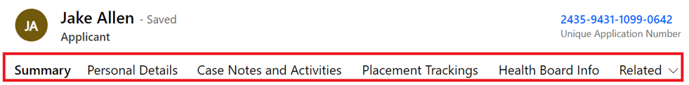| Tab name | Summary of Tab |
|---|---|
| Summary |
Provides an overview of the individual record, which includes:
Case notes and record activities such as meetings, tasks, and any other actions taken to capture information relevant to that individual’s journey are also featured here. Checks and services offered can be quickly updated here and are used for filtering data |
| Personal Details |
Gives a more in-depth record of the applicant’s contact details plus details of their sponsor/host (where applicable). |
| Case Notes and Activities |
Summarises all case notes raised for an applicant. Case notes may include notes on travel information, checks outstanding or notes on changes to the makeup of their household group. |
| Placement Trackings |
Lists all current and previous placements. This includes records of when an applicant stays in temporary accommodation or welcome centres as well as their move to permanent accommodation. |
| Health Board Info |
Provides additional information for Local Health Boards relating to their registered medical practice. |
| Related |
Provides access to Audit History for those that have permission. It provides a time stamped record detailing all changes made to an individual’s record. |
Household
A household group is a group of individuals that have travelled together to the UK and wish to move into accommodation together. Households can encompass both related and non-related individuals. Any information related to their requirements as a group is captured under their Household ID. Household IDs start with FAM (if created before data is imported into the system) or WG (if changes are made to Household Group after data import) and are followed by numbers.
To acces a household record:
From either the Households section or an individual’s record, left-click on the Household ID. This will open a new screen, titled with the Household ID. You can then see different overviews for the household by clicking through the various tabs.
| Tab name | Summary of Tab |
|---|---|
| General |
This tab gives an overview of the household details, including a list of the individuals within the household. In this tab you can also make edits to the makeup of the household (adding or removing household members and assigning lead applicant status). You can also make a household note for any information relating to the household group. |
| Timeline |
Here you will find a summary of case notes and changes made to the household record. This includes details of who made the changes and when the change was made. |
| Placement Tracking |
This Tab provides a summary of the placement tracking records for the household. You can also create new placement tracking records depending on the placement type. |
| Housing Needs |
This tab provides details of the household set up and all the requirements and needs of each individual household member. It also details any pets arriving and any additional needs or adaptations required. |
| Move on Search |
This section provides a table displaying all available offered properties both locally and across Wales and is used to create reservations between hosts and household as part of the move on process. |
| Individual or Super Sponsor Applicant Checks |
Shows the checks required depending on the sponsor route the applicant is travelling under. . |
| Related |
Provides access to Audit History for those that have permission. It provides a time stamped record detailing all changes made to a household record. |
Sponsor
The Sponsor screen provides details of the sponsor. This includes details of the sponsor’s contact preferences as well as any case notes or activities relating to the individual.
To access an Individual Sponsor record:
Double-click on the sponsor’s name from the Sponsors section. This will open a new screen, titled with the sponsor’s name. You can then see different overviews for the sponsor by clicking through the various tabs.
| Tab name | Summary of Tab |
|---|---|
| Summary |
The Summary Tab section includes:
You can also add Case Notes and Activities against the record and will be able to record checks. |
| Placement Tracking |
Shows placement tracking for individuals who are or have previously been housed with the Sponsor. |
| Host Addresses |
List all the available addresses in which a Sponsor has been approved to house applicants who have applied via the Individual Sponsor Route. |
| Sponsor Household |
Shows individuals that live with Sponsor at the time of application. |
| Applicants |
Shows individuals who have listed them as a host on their Individual Sponsor scheme application. |
| Related |
The options within this tab are Audit History and Applications. |
Sponsor Household
The Sponsor Household screen allows you to see who else from the sponsor’s family is living in a sponsor’s accommodation at the point of application. For example a sponsor’s child or partner.
To see an Individual Sponsor Household record:
Double-click on the individual’s name from the Sponsor Household section. This will open a new screen, titled New Sponsor Household e. You can then see different details of the individuals within a sponsor’s household.
| Tab name | Summary of Tab |
|---|---|
| General |
The General tab gives a brief overview of all individuals that live in the sponsor’s household. |
| Related | Provides access to Audit History for those that have permission. It provides a time stamped record detailing all changes made to a sponsor household’s record. |
Using the system
Searching for a record within your local authority
- Click on Applicant Section if searching for an individual, or Household section if you are searching for a FAM ID reference.
- Enter a search term into the search tool
 and press enter. For example, you may want to search for an applicant using their last name.
and press enter. For example, you may want to search for an applicant using their last name. - This will filter the table to show the relevant results.
You can also search for a sponsor or applicant across the whole system.
- Search for sponsors and applicants by entering their name into the search bar and pressing enter or clicking the search icon.
- Your search results will then display in different tab: Contacts (Applicants), Sponsors and Applications.
- You can click on the record to access further information.
- If you need to filter the information further, open the Filter pane by clicking on Filters which runs vertically down the right side of your screen
- If you wish to do an advanced search, you can click on the "Search for rows in a table using advanced filters' option.
Searching for a record outside of your local authority
The ‘out of area search’ function has been developed to enable you to find basic information about any record within the platform, regardless of which local authority the record is assigned to.
To access the out of area search, you need to:
- Click on Search Applicants from other LA's which is listed under People in the left-hand navigation bar.
- Once the search screen has opened you will be able to search by entering the applicant details into the search box.
- Type full or part of the person’s name in the search box using a minimum of 3 characters. This search does not use wildcard characters and will return a maximum of 200 lines of data.
Please note: You are still unable to access records that sit outside of your local authority, but you can use the information provided to contact the owning local authority and discuss any appropriate action. A list of Data Champions can be provided. If you locate a record that says it is in ‘HfU Prod SA’ or it says the Local Authority is ‘orgbc5bf7b2’ you should email the contact centre at wnsadmin@cardiff.gov.uk to have the record reassigned to your LA.
Important: If you cannot find the record after using both the top search bar and the search applicants tab, but you are aware of an applicant having arrived in Wales, you should email the contact centre to query if this could be a cross border reassignment and follow the process for that.
Welcome Centre Checks
When a person or household group arrives at a Welcome Centre / Initial Accomodation, there are several checks that need to take place before they are ready to be matched to suitable accommodation. These are grouped into separate checklists.
Any additional non sensitive notes that need to be recorded can be added to the Timeline on the summary page of the applicant record.
Initial 'Check in' Check
Ideally completed as soon as an individual reaches the Welcome centre or emergency accommodation the initial checks list focus on immediate health requirements and getting them settled.
Check list items are:
- Meet any immediate needs (medical, essential supplies). If any medical needs, contact local healthcare team or 111 if further advice needed.
- Offer Covid test (not compulsory but advised). If positive, alert healthcare worker.
- Allocate room.
- Provide a Welcome Centre information pack and tour of facilities.
- Book individual / family health appointment with health team
- Refer for DWP support
- Refer to casework team if immediate financial support is required
- Offer new mobile SIM card if required
After this check you will need to create a placement record for the new Welcome Centre Allocation.
Please note:if a new SIM card is provided, ensure the number is added to the “Preferred number” field within Person Information in the Summary tab.
Second Stage Checks
Following on from initial checks, you will need to complete and toggle the applicant checks in the platform and Create a case note to cover any non sensitive details relating to these checks.
System checks include:
Super Sponsor
Individual Sponsor
To ensure these checks show as completed please follow the guidance for Updating the Applicant Checks Box
When these checks/services have been offered or provided, and the citizen is ready to move onto alternative accommodation you can change the journey status from SS07 – SS08 Welcome Centre Ready for Move On. That will then enable local authorities to assess the housing need of individuals in the Welcome Centre who have had checks completed against available accommodation.
Sponsor / host checks
The sponsor or prospective Host (EOI) and their property should be checked prior to arrival, or very shortly after, a person or household are matched to them. The sponsor check box (shown below) can be used to track when a check has been carried out. The two checks with padlocks will be provided the DLUHC data feeds and only apply to Sponsors, who have sponsored an application.
The checks should be toggled on the data platform once completed and include:

Introductory Contact Made – The LA has reached out to the host to make introductions, confirm they are still happy to host, provide all necessary information regarding the hosting and ensure they are prepared.
Consent for DBS – within the introductory contact the host should provide consent to start the DBS process, this will then either be completed by the individual or by the LA as per local processes.
Basic DBS Check Completed - to ensure that the Basic DBS check has been completed.
Enhanced DBS Check Completed - to ensure that the Enhanced DBS check (if required) has been completed.
Please note: only one DBS check needs to be completed, this is at the discretion of each LA as to which one, however it is recommended that an enhanced check be completed if the host is willing to house families with children or vulnerable adults.
Sponsor checks only: As part of the application process, a sponsor may be rejected by the home office if they fail their PNC (Police National Computer services) or Home Office Warnings Index Checks. This will be recorded in the data platform under a locked field on the sponsor record and will be read only for information only. It will be the Home Office’s responsibility to rematch the applicant to a suitable sponsor for their application, this will also show in the sponsor checks section under Home Office Rematching as a read only checkbox for information only.
Host Address Related Checks
The Host Address section has had some small changes made to ensure accurate data capture. On each host address record, you will see the housing inspection checkbox:

Housing Inspection Check - to ensure the property is suitable and meets the correct criteria to host applicants.
This has been removed from the Sponsor/Host section and will now sit on each individual host address record. The toggle will need completed for each individual property that the sponsor/host has offered once the checks have been confirmed successful.
Bulk updates to checks
There is a table within each household record which lists the members of the household and which checks they have undergone in the Welcome Centre. When several members of a household group have each undergone the same checks (such as having a family health appointment booked or medical screening completed), you can quickly update these checks in a single location to save time.
You can also use this table to see which members of a merged household (a reunited family for example) have had checks and which individuals have not.
To update all of the records at the same time:
- Click on the Household ID for the person or group you wish to update.
- Click on the Super Sponsor / Individual Sponsor Applicant Checks button in the top menu (depending on which sponsorship scheme the person is on).
- Use the dropdown menu to change the status of the check from No to Yes once completed, ensuring you click the save button at the top of the page or as indicated below when you have completed your updates:
Using case notes
You will need to create a case note to record any checks which have been completed and add any additional information. To do this:
- Double-click on the name of the applicant whose record you wish to update. This will take you to the individual Applicant screen.
- On the Summary tab, under Case Notes and Activities, you can add case notes. This should be done for each person arriving.
- Click Enter a note:
-
Add a title for your case note and add details in the main text box. In this case, you may want to simply copy the checklist above to indicate that these are the checks that have been carried out.
For ease of filtering and future reference please add the following in the title of the case note:
- The name of the Welcome Centre and your initials, for example Ty Magor WC – SL. You will see the Contact Centre will have added WNSU CC + initials to their records.
- If you are working within a Local Authority, please insert your Local Authority name and your initials, for example, Conwy CC – SL.
- To add your note, click the Add note button.
- To discard your note, click the Cancel button.
or
Please note: If the case note is related to the household group, please ensure you add the case note on the household page. Applicant case notes should refer to that individual applicant only.
Tips for adding information into the Case Notes and Activities
- Provide as much detail as possible BUT do not include any health/sensitive information. For example, you could say a medical check has been booked/completed but not information about the outcome.
- Do not delete a record unless it has been added in error. You can annotate it has been completed or if a task or appointment mark as complete using to tick icon which appears when you hover over a record.
- You can create a Task, but you are not able to assign tasks to other team members.
- You are only able to update your own case notes.
- The system is not designed for document upload.
Adding a Complex Case flag
A complex case flag can be applied to individual applicants’ records. This is used when an applicant may have a complex health or personal circumstance which may mean they should be supported differently.
A complex case flag creates a pop-up message that appears whenever the applicant’s record is accessed to notify the platform user of the complex case.
It is vital that the privacy of the applicant is protected. Therefore, any information outlining their circumstances must be held on local systems. A case note should be added to the platform identifying the person or team to speak to for further information.
To add a complex case note:
- Open the applicant’s record on the Summary section.
- Under Case Notes and Activities, click Yes on the Complex Case dropdown menu.
- Add a case note on the timeline with details on who to contact in the local authority for further information on handling the case appropriately.
After a complex case note has been created, a pop up will show every time the person’s record is accessed.
Updating the Case Notes and Activities Check Boxes
No Non-essential Communications
An applicant may make contact to state they don’t want to receive any communication; however it is necessary that essential communications are still carried out. This means they should only receive information from Welsh Government regarding their current sponsor/hosting position. Restricting their communication preferences to essential communication only means they will stop receiving updates regarding things such as Ukrainian National holiday updates/ information on local Ukrainian events etc.
To action this request in the UDP:
- Go into the Applicant record, and access the summary tab
- Locate the No Non-essential Comunications check under Case Notes and Activities
- Toggle this to YES
Please note: you will need to click the dotted lines once for the toggle to appear and then you can click this again to toggle over to YES
Unaccompanied Minor
There may be occasions when a minor (child under the age of 16) will travel to hosted/initial accommodation without the accompany of an adult. There may also be occasions where Ukrainian parents repatriate and leave their child unaccompanied with the host/sponsor. It is very important we capture these cases within the data platform to ensure we identify these individuals.
To action this within the UDP:
- Go into the Applicant record, and access the summary tab
- Locate the Unaccompanied Minor check under Case Notes and Activites
- Toggle this to YES
Please note: you will need to click the dotted lines once for the toggle to appear and then you can click this again to toggle over to YES
Locked Case Notes and Activities Check Boxes
These are locked fields within the system that are updated through DLUHC data flows. They are read only records and serve for information purposes only.
| Check | Explanation |
|---|---|
| Re-assignment/ Cross Border Move on | If toggled, this will indicate that the individual has either been re-assigned from another UK Nation following the Rematching/Reassignment process. |
| Withdrawn | If toggled to yes, this will indicate the applicant has withdrawn this application for a visa – this can either be due to no longer needing the visa or due to there being multiple visa’s applied for. |
Updating the Applicant Checks box
To ensure reports can be accurately extracted by a range of organisations please ensure you update the checks box. The checkboxes are split into Super Sponsor Checks and Individual Sponsor Checks.
Click the boxes to switch between yes and no. A blue box indicates the check has taken place.
Updating / Creating a Housing Need
Housing needs will initially be created by:
- The Contact Centre for applicants coming through the Super Sponsor scheme
- The appropriate Local Authority for applicants coming through the Individual Sponsor scheme
If a person joins or leaves a household ID group, you must:
- Update the housing need requirement for the existing household
- Create a new housing need for the person that has been moved (if they are not joining another group).
Every Household ID, where the household is seeking new accommodation, should have a completed housing need tab which helps Local Authority colleagues when matching individuals to suitable accommodation, whether that be for individuals needing to be re-housed via the super sponsor scheme or for individuals who have arrived on the individual sponsor scheme.
Updating an existing Housing Need
- Go to the Applicants section and double-click on the name of an applicant to get to their individual applicant screen.
- On the Summary tab, click on the Household ID (FAM# or WG#).
- On the Household screen click on the Housing Need tab. 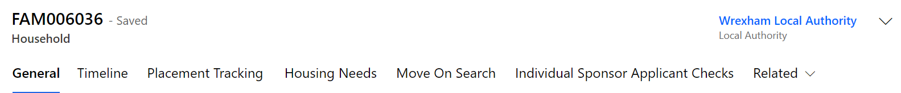
- Make changes to the fields as required. Those marked with a red asterisk (*) are mandatory.
- Once you have made the required changes, make sure to save by clicking the Save button or Save & Close button.
Creating a new Housing Need
- Search for the applicant(s) in the Applicants section
- Once you have found the applicant, click on the Household ID (FAM# or WG#). This will take you to the Household section.
- On the Household screen click on the Housing Need tab – if there is no active housing need you will see the message: Source record not selected.
- You will need to click the Create Housing Needs button, which will show at the top of the household screen. 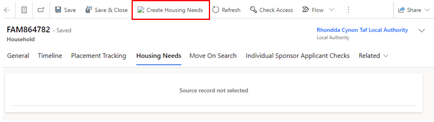
- You will then see a pop up confirming that a housing need will be created for the household – select ok.
- This will generate a blank housing need screen.
- Complete the fields as required. Those marked with a red asterisk (*) are mandatory.
- Once you have made the required changes, make sure to save by clicking the Save button.
- As the Housing Need Record sits within its own tab, it will automatically link to the Household record.

The Move on Process
The move-on process has become the key focus of the Ukraine programme. In closing Initial Accommodation (IA) and Welcome Centres (WC) the overarching aim is to move people from WC/IA accommodation to longer term accommodation including hosted accommodation. We are also looking to place new applicant arrivals directly into hosted accommodation to reduce use of initial accommodation.
There is now a more definitive need to incorporate the move on process into the UDP and by doing so will reduce data duplication, provide a more consistent approach to managing move-on, make processes easier and will provide us with a complete single source of the truth.
The new process, as such, will remain quite like the current process:
- EOI offers will need to be triaged by the local authority.
- All standard housing and DBS checks will need to be completed.
- Once checks have successfully been completed the property will be made available to all LA’s when searching.
- LA’s will be able to locate properties based on the criteria set out in the housing need for each household.
- A property can be reserved by any LA and once reserved, becomes unavailable to others that are using the move on search function.
- Once matching has been completed a placement tracking will be auto created.
New processes that will be introduced following the move into the UDP (on 5th July 2023) will be as follows:
- There will be no requirement to upload the EOI manually into the UDP and you will not be required to enter data previously received via Objective Connect (this will be made Read Only) . All EOI’s that come through the Welsh Government Homes for Ukraine smart survey will be automatically uploaded via a data load.
- The LA will be responsible for inputting information into a new ‘offered property’ tab which will help aid the search functionality.
- The new search functionality will ensure that only one property can be reserved at a time.
Please Note:
- EOI’s that are matched outside of the smart survey, usually as a result of self-matching will still have to be manually uploaded to the platform.
- The move on process will also amalgamate all available hosts – not just EOI’s. This means that when a household leaves their hosted accommodation and the host is still willing to host another family, the LA can recycle this record to be used within the reservation process on the move on search tab.
LA / Contact Centre Responsibilities for the Move On Process
Both the contact centre and each respective LA will have responsibilities within the UDP to ensure that the move on process runs smoothly.
Contact Centre Responsibilities
The Contact Centre’s responsibility within the move on process is to ensure that direct allocations for Super Sponsor applicants runs smoothly.
- The overarching concept of direct allocation to hosts includes allocating arrivals through the Welsh Government Super Sponsor Scheme to hosts prior to their arrival in Wales. People will travel directly to hosts on arrival in the UK rather than placed in initial accommodation. Directly allocating people reduces the demand on initial accommodation and the need for local authorities to move people on from initial accommodation.
- The Contact Centre will identify available host offers via the move on search. They will then liaise with local authorities to coordinate the direct allocations and matching people to suitable hosts. People will not be directly allocated to a host by the Contact Centre without the agreement of the receiving local authority. The intention is to directly allocate all new arrivals to hosts where suitable host offers are identified. People will be offered initial accommodation in the form of a Welcome Centre or holiday park where a suitable host is not available.
- The Contact Centre will liaise between hosts and guests regarding arrival and travel to Wales. The contact centre will also manage the reservation process via the UDP to ensure that household records are linked and moved to the owning Local Authority of the new host / host address once the reservation process has been completed.
Local Authority Responsibilities
Each local authority will need to ensure that they have completed the following.
For Households/Applicants:
- Every Household within their LA has a completed Housing Need Tab.
- When a person joins or leaves the household the Housing Need Tab is updated to reflect the new household set up.
- The household timeline is updated with any important (but non sensitive) notes regarding the household.
- When actioning the move on search the LA must do this from the household tab and should consider the household needs when filtering their search.
- When a property has been reserved the LA must liaise with the host address Local Authority (if this is different to their own) in an efficient and timely manner.
- When a property has been reserved, process the reservation through the stages, via the reservation status dropdowns, until the match is complete – regardless of whether the property is in your LA or not.
For sponsors/hosts:
- For every Sponsor or host (EOI), all sponsor and household checks must be completed and toggled before the property is made available in the move on search.
- Keep track of each reserved property within your LA (by means a of a view)
- Keep track of any hosts and host addresses that become available after their applicants have vacated to conduct a triage call for potential further hosting responsibilities (accessed by means of a view)
- Liaise with LAs who reserve one of your properties for their household – to arrange meetings and travel.
Offered Property Tab
The offered property tab sits within the host address section as a separate tab. This tab contains anonymised data and a partial postcode, to ensure that other LA’s access relevant data only.
The purpose of the offered property tab is to document the details of the property being offered, so that the Household property search shows viable properties only.
It is very important that this information is kept up to date and accurate to ensure that property searches across the board become successful reservations/matches.
The tab will include the following information, please complete the fields as required. Those marked with a red asterisk (*) are mandatory:

An offered property tab will appear automatically on any EOI data or when an additional address is added to a record. Existing sponsor records within the system that have an active hosting will still have an offered property tab but this will be empty and show ‘Source record not selected’:
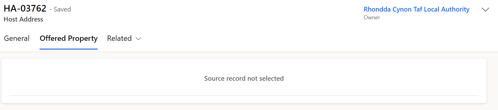Once the current placement ends and the host address becomes available, the offered property status will revert to ‘Pending Checks’, and a blank offered property form will generate in the offered property tab. It will be your responsibility to communicate with the host to enquire if they wish to host another family. If they do, all previous checks should be confirmed to still be valid before making changing the offered property status to available.
Workaround for host addresses that haven’t generated an offered property tab
From time to time there may be other occasions where previous Sponsor data does not produce an offered property form, the tab shows as ‘source not selected’ and a work around is required to produce a new offered property tab. This will usually only be the case for historic data and on occasions where original applicants are no shows and therefore there has been no move on PTs created which would normally force the creation of an offered property.
In these instances, to generate an offered property tab you should:
- Create a new host address on the host address tab, copying all the information from the original host address record.
- Assign the new host address to your local authority.
- This will generate an offered property tab with the status ‘new’.
- Contact the nationofsanctuarysurvey@gov.wales mailbox to explain you have created a new host address as part of the work around and require the old host address to be deleted.
The UDP team will then remove the previous host address from the record so that you can continue to work with the record to ensure its ready to be made available.
Please note: If the host no longer wishes to house any new applicants, then their records need to be set to withdrawn and this will automatically set the offered property tab to removed.
To view all offered properties in your area you will need to access the Offered Properties tab via the left have navigation:

You can then access the view ‘My LA New / Pending Properties’ from the dropdown menu which will show all new offered properties and all properties currently pending checks.

To access all Available properties in your area you need to select the ‘My LA Available Properties view:

How to access the Host Record from the Offered Properties Tab
- Click the Offered Properties Tab:
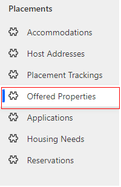
- Once you have selected the system view you wish to use, double click on the offered property you wish to access:
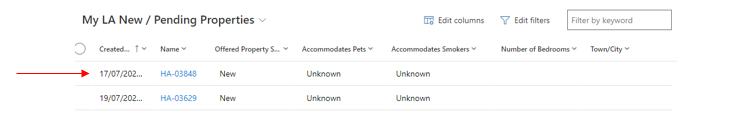
- Once in the record, select the Related dropdown and click Host Address:

- When the Host Address Tab appears double click into the host address:
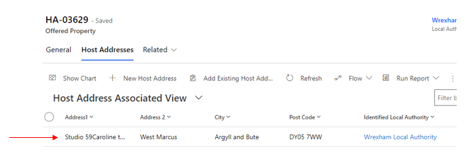
- Once in the Host Address record you will be able to see and click into the host name:

- You will then see the full sponsor / host record:

Searching for an Offered Property
Once all checks are complete on an EOI record, the offer becomes viable and the status will need to be changed from ‘pending checks’ to ‘available’ on the offered property tab.

This means that the record will be viewable to all local authorities across Wales for them to reserve where appropriate.
It is imperative that the housing need tab is kept up to date to ensure an accurate search is carried out and the correct host / household match is made.
Each LA will be able to search for all available offered properties via the ‘move on search’ tab on the household record.

Move On Search
Within the Household Move On Search tab, each local authority will have access to the following view:

The view can show records from all local authorities across Wales in one table but also enables users to filter a few LA’s at one time or narrow the search down to one LA at a time. This will ensure that LA’s can tailor their initial findings based on area, which can either be across the whole of Wales or for a particular LA and its surrounding areas if required.
To search by the whole of Wales:
Select the Wales Wide drop down on the move on search tab in the Available Properties table. This will show all available properties across every local authority within Wales. This view can be filtered to tailor the search to the household needs, including filtering to specific locations.
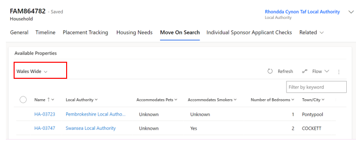To search by individual LA:
Select the ‘My LA Available Properties’ drop down in the Available Properties table. This will show all available properties within your local authority only. This view can be filtered to tailor the search to the household needs.

To create more specific filters for the move on search such as showing only properties with a certain number of bedrooms, you will need edit the views by editing the columns and filters.
Reservation Process
Once a suitable property has been found you will need to follow the reservation process to ensure a match is completed successfully.
Reservation process:
- You will need to select the reservation by clicking the tick box on the left-hand side of the record in the list.
- You will then need to click the reserve button.
- A pop-up window will confirm you wish to reserve the selected property - Click OK to reserve it.
- You will see a ‘Reservation was created successfully’ message.
- This will remove the record from the available offered properties view and change its status to RS00 – New Reservation.
- You can access the reservation from the general tab on the household page

The reservation journey status will show on the record and will need to be updated as you move through the process.
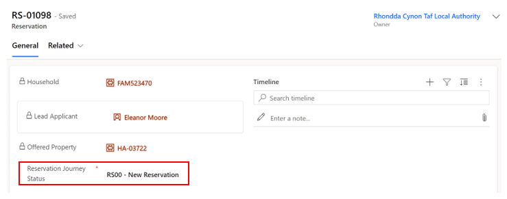The reservation will move to the Reservations table which can be located on the left-hand navigation.

The reserving Local authority will be able to view all active and inactive reservations here depending on the dropdown selected. Once a reservation is complete the reservation will become inactive and move to the inactive reservation tab.

Please Note:
If the reservation is within the same Local Authority then the user will have access to the household record, the host record and the reservation record.
If the reservation is requested for a property in another Local Authority only the requesting LA will see the reservation. Both LAs will need to communicate off the Data Platform to ensure that the reservation process is completed successfully. The requesting LA should email the LA in which they have reserved a property (where applicable) as soon as they reserve on the UDP. This will make the receiving LA aware of which property has been reserved and by who and will also speed up the process to ensure the move happens quickly and efficiently.
A list of LA contacts who handle Move On is detailed on the Move On Contacts Details spreadsheet, within the URD – Onward Accommodation objective connect workspace.
Reservation Status
Each stage of the reservation process requires a reservation status update. Certain reservation statuses will have influence over the automatic update of the offered property status.
An example of this would be when ‘RS02 – Host/Applicant introduction successful’ is selected, the offered property status will change from ‘Reserved’ to ‘Matched’.
It is important to understand what each reservations status means and its effect on the offered property status.
| Reservation Status | When should this be used | Impact on offered property status |
|---|---|---|
| RS00- New Reservation (Default) | This is the default status when a reservation is selected | Status remains as ‘Reserved’ |
| RS01 - Applicant informed of reservation | The LA has reached out to the applicant to inform them of details of property / host / location etc and the applicant has accepted the reservation. At this point a meeting with host and household will be arranged. | Status remains as ‘Reserved’ |
| RS02 - Host / Applicant introduction successful | The host and household have met, either in person or virtually and have both agreed they are happy to go ahead with the reservation. | Once selected the status will change from ‘Reserved’ to ‘Matched’ |
| RS03 -Enhanced DBS check in progress | If the host has previously only completed a basic DBS check and now requires an enhanced check (because for example there will now be a child / vulnerable adult being hosted). This status will be selected once this process has started. | Status remains as ‘Matched’ |
| RS04 - Enhanced DBS check complete | The enhanced DBS check has come back complete with no issues. | Status remains as ‘Matched’ |
| RS05 – Date for move on confirmed | The LA has arranged between the two parties a date/time for the household to arrive at the new hosted property. | Status remains as ‘Matched’ |
| RS06 – Travel to new host arranged | The LA/host has arranged travel for the household to arrive at the new hosted property. | Status remains as ‘Matched’ |
| RS07 – Move on match complete | The household has successfully moved into the new hosted accommodation with no issues. | Once selected the status will change from ‘Matched’ to ‘Match Completed’ |
| RS08 – Match Unsuccessful | The host/household match has fallen through (potentially because either or both parties have changed their mind) / the reservation was selected in error / the host has failed further DBS checks. | Once selected the status will change from ‘Reserved’ / ‘Matched’ to ‘Available’ |
If a match becomes unsuccessful
There may be occasions where a match is deemed unsuccessful. This may be due to the host or household changing their mind, it may be due to unsuitable accommodation/ location, or it may simply be that the property was reserved in error.
When this happens, you should:
- Make a note on the timeline explaining the reason for the match being unsuccessful (if necessary and remember to not include any sensitive information).
- Ensure both parties are aware that the reservation will be deleted.
- Set the reservation status to RS08 – Match Unsuccessful.
If RS08 – Match Unsuccessful is selected, then a sub status reason will appear. This will enable you to specify the reason for the unsuccessful match. This will ensure that no unnecessary information is inputted into the system and a generalised status reason is displayed. The status reason does not include detailed information of why the match was unsuccessful, it is for overview purposes only.
One of the following status reasons should be selected depending on the individual circumstances:
| RS08 – Match Unsuccessful Status Reason | When should this be used? |
|---|---|
| Household rejected host | When the household has decided that the host / hosted property or location is not suitable for them. This should also be selected if a host has failed further DBS checks. |
| Host rejected Household | When the host has decided that the household is not suitable for them to host |
| Both parties in disagreement | When both the host and household agree that the hosting isn’t suitable for either party. |
| Property reserved in error | When a property has been reserved incorrectly and no action has been taken |
To view all reserved hosts and properties that reside within your LA
Because the reserving LA has access to the reservation only, as the receiving LA you will have access to a system view that will ensure that you have sight of all reserved properties situated within your LA.
To access the view:
- Go to the offered properties tab (accessing via the left-hand Navigation)
- Select the view ‘My Offered Properties with an Active Reservation’ view
This will enable you to track the offered properties that have been reserved and what their current offered property statuses are. Unfortunately, you will not be able to see who has reserved this property if the reserving LA is different to your own. It is very important that LAs make other LAs aware immediately after they have reserved a property for this reason alone. This will also help to mitigate situations where two people are potentially looking to match to the same available property.
Match Process
Once the final steps for the reservation process have been completed you will need to:
- Ensure all necessary timeline notes have been created.
- Set the reservation status to RS07- Move on match complete.
- Enter the start date for the move.
- Click Save or Save & Close.
Automatic creation of a new placement record
Once the match process is completed successfully a placement tracking will be created whether this is within the same current LA or whether the new hosted arrangement is in a different LA.
The completed match process (setting the status to RS07- Move on match complete with the start date) will link the host and household together on the host section of the household tab. It will create a placement tracking on the household, applicant and sponsor records and will move the household into the new LA (if the household is moving from one LA to another). To confirm this has processed correctly you can go back into the household record and into placement tracking’s and view the new placement tracking records. If the household is moving to a new LA you will lose sight of the household record completely once you have entered the start date for the reservation.
Matching within the same LA
If the household and host both reside in your local authority, then the match process will mirror the reservation process:
- Find a suitable host by using the move on search.
- Reserve the host.
- Follow and complete the reservation process.
- Ensure all necessary timeline notes have been created.
- Set the reservation status to RS07- Move on match complete.
- Set the start date as the first day of the new placement.
- Click Save or Save & Close.
Once the match process is completed successfully a placement tracking for ‘Sponsor/host’ will be created and will create the link between the host and household. The new host details replace any existing host details on the household and applicant records and the creation of the new placement tracking will close any previous placement tracking’s associated with these records.
If you are creating a placement tracking for any other option other than ‘sponsor/host’ for example ‘move on accommodation’ this will not pull through the host details into the placement tracking. It is important that you consider the below placement reasons and when to use them within a placement tracking record:
| Placement Type | Reason for Placement Type | Additional Reasons | Additional Reasons 2 |
|---|---|---|---|
| Hospital | When someone has left their accommodation to be hospitalised | ||
| Move on accommodation | When someone has left hosted accommodation to become self-supported | When someone has left one local authority to be hosted at another | When someone has left Wales to live in another country, this will either be to another UK region or another country outside of the UK (unless they are repatriating to Ukraine) |
| Repatriation | When someone has left the UK entirely to return to Ukraine | ||
| Sponsor/Host | When someone is matched with a host - usually for the first time on the individual scheme | When someone is new to the local authority having moved from another LA in Wales to live with a chosen host | |
| Temporary Accommodation | When someone arrives unexpected and is housed in initial accommodation (welcome centre) until a suitable host can be found | When someone needs to leave host address due to relationship breakdown and is moved to initial accommodation (welcome centre) | When someone needs to leave host address due to relationship breakdown and is moved to another host temporarily |
| Welcome Centre | When a person on the super sponsor scheme is housed in initial accommodation (welcome centre) | ||
| Temporarily Left | When a person has left their hosted accommodation for a short, temporary period for a holiday etc. There will be a known return date and the case should be kept with the LA. |
Matching to a different LA
If the household resides in your LA but the host resides in another local authority, you will need to follow the below steps:
- Find a suitable host by using the move on search.
- Reserve the host.
- Liaise with the receiving LA to follow and complete the reservation process.
- Ensure all necessary timeline notes have been created.
- Set the reservation status to RS07- Move on match complete.
- Set the start date as the first day of the new placement (once confirmed with receiving LA)
- Click Save or Save & Close
At this point the current LA will lose access to the record(s) as these will be automatically transferred over to the new LA. The host will automatically be replaced with the new host on the household page, the current PT will end. It is important that you inform the new local authority the records have been transferred across.
The new local authority needs to:
- Check the records have been received correctly.
- Ensure all relevant information has been recorded.
- Complete any future check ins with the host and household.
Once the host has confirmed the move has taken place, complete the finance section of the host record.
Creating / Closing a Placement Record
Whenever a household is moved, you will need to create a new placement record. This creates a history of their placements including start and end dates and reasons for moving.
Creating and closing placement records is equally applicable irrelevant of the Scheme.
Creating a new placement tracking will force the closure of the previous placement tracking, so it is really important that the dates are entered correctly.
If you only need to move one person in the household (for example someone needs to be moved to hospital) they will need to be split from the family group. You can find instructions on how to do that under the removing an applicant to a household section.
Closing a placement record
You do not need to close a placement record before you create a new record detailing their next placement. When you create a new placement tracking, this will automatically close the previous. You must update the move on reason before you create a new placement tracking, to do so:
- Click on the Household ID number (either FAM ID or WG ID) from an Applicant Summary record.
- Go to the Placement Trackings tab.
- Click on the record you wish to close.
- Add the move on reason (using the drop down).
- Click Save or Save and Close.
Creating a new placement record
- Click on the Household ID number (either FAM ID or WG ID) from an Applicant Summary record.
- Go to the Placement Trackings tab
- Click the New Placement Tracking button
- On the New Placement Tracking form, complete the fields as follows:
- Once you have completed all relevant fields, click the Save or Save & Close buttons.
| Form criteria | Content to enter |
|---|---|
| Applicant | (Already completed) |
| Placement Type | Welcome Centre / Temporary Accommodation / Hospital /Move on Accommodation / Sponsor / Host etc |
| Date started | Date when person arrived at their accommodation i.e welcome centre |
| Date Allocated | Date when Contact Centre allocated space in Welcome Centre (if known / applicable) or Local Authority allocated space for other accommodation |
| Date ended | Leave blank (until person leaves) |
| Allocated Welcome Centre | Name of WC/emergency accommodation (hotel) from pre-populated list |
| Address | Room number, wing etc in WC or address of other accommodation such as emergency accommodation / hospital |
| Local Authority | Your LA |
| Host Sponsor | Leave blank until person is moved out of WC to permanent accommodation |
| Move on reason | Leave blank |
| Application | Leave blank |
To create a sponsor/host placement tracking you need to follow the Move on and Reservation Process.
When you are creating a placement tracking for any other option other than ‘sponsor/host’ for example ‘move on accommodation’ you will not see any sponsor/host details on the right hand side of the placement tracking..
It is important that you consider the below placement reasons and when to use them within a placement tracking record:
| Placement Type | Reason for Placement Type | Additional Reasons | Additional Reasons 2 |
|---|---|---|---|
| Hospital | When someone has left their accommodation to be hospitalised | ||
| Move on accommodation | When someone has left hosted accommodation to become self-supported | When someone has left one local authority to be hosted at another | |
| Repatriation | When someone has left the UK entirely to return to Ukraine | ||
| Sponsor/Host | When someone is matched with a host - usually for the first time on the individual scheme | When someone is new to the local authority having moved from another LA in Wales to live with a chosen host | |
| Temporary Accommodation | When someone arrives unexpected and is housed in initial accommodation (welcome centre) until a suitable host can be found | When someone needs to leave host address due to relationship breakdown and is moved to initial accommodation (welcome centre) | When someone needs to leave host address due to relationship breakdown and is moved to another host temporarily |
| Welcome Centre | When a person on the super sponsor scheme is housed in initial accommodation (welcome centre) | ||
| Temporarily Left | When a person has left their hosted accommodation for a short, temporary period for a holiday etc. There will be a known return date and the case should be kept with the LA. |
When a new placement tracking record is created for anything other than ‘sponsor/host’ – the host details will automatically be removed from the Household page. You do not need to remove the host prior to ending the current placement tracking as the creation of the new placement tracking will end the current sponsor/host placement tracking and remove that link to the host on the household.
Updating an existing Placement Tracking
If you identify that need to make a change / update a placement tracking that you have created on the household page, it will be possible to do this, but you may be limited to what you can change. Once a placement tracking has been updated, all changes will filter through to the linked applicant and sponsor placement tracking’s. We refer to this as the ‘Parent / Child’ relationship between placement tracking’s (the parent being the household PT and the child being the applicant PT)
To update a placement tracking:
- Go into the household placement tracking.
- Select the PT you would like edit and click edit (you can also just double click on the record)
- Once in the PT you can update any of the fields to add or remove information.
- You can only amend the start date of a PT to a later date than the original date set, if is the first ever PT created for the household.
- Click save and close.
- The changes will reflect on the applicant and sponsor PTs (if applicable)
Please note:
- If this is the first PT ever created for the household the start date can be altered to any date.
- If the PT you are amending is the most recent PT, you will only be able to amend the start date to a later date. If you attempt to select an earlier date that the original date selected you will see the below error.
- If the record you are trying to amend is in the middle of other PT’s both the start and end date fields will be locked and uneditable.
- The end date of any PT will always be locked and you will not be able to update it – it is very important that when creating a new PT, the date selected is correct as this will impact the end date if the previous placement tracking.
Creating PT’s when there is an active reservation
There may be occasions where a reservation is in progress and a family need to move temporarily to emergency accommodation until the new reservation is complete.
The system will allow a PT to be created whilst the reservation is in place providing the person is staying within the same LA. Once the reservation is completed the new PT will close the previous and pull in the new reservation and host details.
If a PT is created with the local authority as outside of Wales: (outside of UK); (England) (Scotland):
This may be due to the individuals repatriating or relocating. The system will prevent the PT from being created until the reservation has been closed. The below error message will appear:

The reason this is blocked is to stop open reservations from being left in the system. If a reservation has fallen through because the household has decided to leave Wales this should be set to RS08 – match unsuccessful and the status reason, be set to ‘property reserved in error’ before a PT repatriation or move on (with England or Scotland as the LA) PT is created on the household.
Other Placement Types
If Sponsor/Host PT is selected
If a sponsor/host Placement type is selected whilst there is an active reservation, the system will prevent the PT from being created:

This is because the reservation process should be followed to create a sponsor/host PT.
Please note:
If there is a host already attached to the household (from a previous/ current placement) then until the reservation is set to 'Matched' - RS02 – RS06, a host/ sponsor placement tracking will still be able to be created but will link to the current host linked to the household page. Once the status is reflected to show the host / household as matched, the above error will appear preventing a PT from being created until the reservation process has been successfully completed.
If there is no active reservation
If the reservation process hasn’t been started but there is a host attached to the household (from previous data load) and no PT has yet been created, the system will allow this to be created to reflect the current hosted placement.
When the time comes for the host to be changed, the reservation process should be followed.
If any other PT is selected
If any of the below PTs are created whilst a reservation is in place, the system will allow the PT to be created provided that the local authority is within Wales:
- Hospital
- Move on accomodation
- Temporary accomodation
- Welcome Centre
- Temporarily Left
You should only need to create these placement tracking’s in emergency situations where someone needs to be relocated prior to the reservation process being completed.
If you are creating a placement tracking for a more permanent move that is not a host/sponsor placement created via the reservation process, you should close the active reservation beforecreating the PT.
Creating a historical Placement Tracking
There may be a requirement to create historical placement tracking record for the period of time where applicants had arrived into Wales but the UDP was not yet set up.
The ability to add a historic placement tracking will allow the Local Authority to create placement tracking’s with dates created prior to the first placement tracking for the household. It will be the LAs responsibility to input any historic placement tracking’s for households who remain within the same Local Authority. For households that no longer live in the same Local Authority as their original placement – it will be the responsibility of the Contact Centre to input historical placement tracking’s on these records, due to them having access to all Welsh LA data. The contact centre will liaise with the previous LA to ensure the information inputted is correct.
IMPORTANT: when inputting multiple historic placement tracking’s, it’s really important that you start by creating the most recent historic placement first and then work your way back to the first placement. As the end date is locked you need to work backwards from newest to oldest placements.
To create a historic placement tracking:
- Go into the household record and select placement tracking’s.
- Referring to the screenshot below, to create a historic placement tracking the date needs to precede the start date of the first placement tracking – in this example it would need to be a date prior to 04/01/23.
- Select new placement tracking and complete all fields, the placement type selected should reflect what the placement type was at the time of the historic placement.
- When you input the start date you will get a warning message that you are about to create a historic placement tracking.
- Select ok and create the placement tracking inputting all relevant information:
- if the placement was for a Welcome Centre you need to ensure you input the correct welcome centre into the allocated welcome centre field.
- if the placement was for a sponsor/host you need to ensure you link the host and host address relevant to that placement.
- Save and close the PT.
Please note: there is no system functionality behind historic placement tracking’s so this will not link the welcome centre or sponsor/host and will also not move the record (if the previous placement was in another LA).
Changing Journey Status
To change an applicant’s Journey Status:
- Go to the Applicants screen and double-click on the name of the applicant whose status you wish to update.
- From the Summary tab, under Person Information, select the Journey Status dropdown.
- Select the correct stage on the journey status.
- Once you have updated the applicant’s status, make sure to save using either the save or Save and Close buttons.
You are also able to update a whole household journey status, by following the instructions on updating multiple records with the same information.
Please note: the stages available on the Journey Status are dependent on the applicant’s route. You may need to check whether the applicant’s is travelling under the Super Sponsor or Individual Sponsor route before changing the applicant’s Journey Status, to ensure you update the correct codes.
Summary of Processes shows the Journey Statuses and definitions.
Updating multiple records with the same journey status
There will be some instances, such as updating a journey status, where it is better to update multiple records of the same household at the same time.
To update multiple records with the same information:
- Double-click on the Applicant Household ID (FAM# or WG#).
- You can then select multiple applicants from the same household using the check box against each record.
- Once you have selected the required applicants, click the Edit button just above the table. This will open the Edit menu:
- You can then update the SS/IS Journey Status or any other appropriate fields for the multiple applicants.
- Make sure to click the Save button once you have made your changes.
Handling No Shows
There will be instances where households do not arrive when anticipated. It may be because they have travelled elsewhere, decided not to travel or are waiting for family members to get their travel documentation. In those situations, they are classed as No Shows. It is recommended that you:
- Changing the Journey Status to one of the following (depending on sponsor route and understanding):
- IS21 - No Show – Known
- IS22 – No Show – Unknown
- SS05D – No Show – Known
- SS05E – No show – unknown
- Add a journey status reason - relevant examples include Case completed; Not Traveling or Move to another scheme.
- Where reasons are known, you can provide addiitonal information in the case notes.
There are no placement records required where an individual has not shown.
Updating the Journey Status for these scenarios is essential as this allows for functionality to remove the host link on the household page. The host will be automatically removed from the locked household fields once all household members have been changed to a no show status and the records saved.
If there are safeguarding concerns, please refer to your local safeguarding policies.
Making changes to Household Groups
There may be circumstances when it is necessary to either add or remove a person to a household, or to change the lead applicant of the group. This section explains that process.
It is vital that when editing household groups, any housing requirements associated with those groups are also amended to reflect the change.
If you change a lead applicant, you must reset the relationships between the applicants in the group.
All edits to the makeup of a household are done using this Action table in the household record:
If you remove an applicant to a new household, their Household ID will start with a WG rather than FAM. This shows the changes were made in the data platform.
Changing lead applicant status
To change the lead applicant status of an applicant you need to:
-
Go to the Household section and click on a Household ID (FAM# or WG#).
This will take you to the individual household screen. From here, on the Action dropdown, select Set Lead Applicant.
- On the Applicant field, search for the applicant you want to set as the household lead.
- You can then add further information in the Action Comment field.
- Once you have set the new lead applicant for the household, save your changes by clicking the Save button or the Save and Close button.
Removing an applicant to a new household
If you are breaking a household group apart for whatever reason, you need to ensure:
- The person moving is not the lead applicant. If they are, you will need to reassign the lead applicant role, as set out above.
- If a person is joining another existing household group, they need to be removed from their existing household before you can add them to a different household. Once removed from the initial household, they will be given a new household ID beginning with WG. They can then be linked to a new household.
- Search for an applicant within the household you wish to edit either through the Applicants or Households menu.
- Double-click on a member of the household and click on the blue Household ID at the top of the summary screen.
- Halfway down the page, under Applicants, click on the Action drop-down:
- From the list of actions, select Remove Applicant to new Household.
- On the Applicant field, type in the applicant you want to remove to a new household.
- Add any comments relevant to the removal of the household member (do not capture any personal data here).
- Click Save or Save and Close.
Once you have completed these steps, you must edit the linked housing need record for the existing household to reflect the change in accommodation requirements.
The host linked to the original household will also be removed from the locked sponsor field within applicant page.
A case note will be automatically generated which will show the household ID they were in and their new WG ID reference.
Adding an applicant to a household group
To add an applicant to an existing household group you need to:
- Search for an applicant within the household you wish to edit.
- Double-click to open their record.
- Click on the blue Household ID at the top of the summary screen.
- Halfway down the page, under Applicants, click on the Action drop-down:
- From the list of actions, select Add Applicant. This will reveal two new fields: Applicant and Action Comment.
- Click in the Applicant box and type in the name of the person you wish to add to the group.
- Add an Action Comment to capture any additional information on why this action was required.
- Click the Save or Save and Close button to complete the action. In the list of household members below, the new applicant will be listed in the table.
- You will need to edit the new household member’s relationship to the lead applicant. In the table, click the dropdown under the ‘Relationship to Lead Applicant’ field.
- Select the appropriate relationship and save your changes by clicking the small disk icon on the right-hand side of the table
- The host linked to the new household will automatically link to the new added applicant and will appear on the locked sponsor section of the applicant page.
- A case note will be automatically generated which will show the household ID they were in and their new household ID reference.
- You will now need to amend the Household Housing Needs record
Please note:
- It is imperative that each household has a lead applicant. For SS records it will usually be included with the contact centre information, but if not, a lead applicant will need to be identified for each household, the LA will need to identify these for IS applicants.
- If the person separating from the house is the lead applicant, you will need to reassign the lead applicant role before you are able to move them from the household. You can read more about reassigning the lead applicant for a household under the Changing lead applicant status section of this guide.
- The new household created will have a WG reference rather than a FAM reference as the changes have been made within the system.
- You must update the housing need of the original household from which the applicant has been removed.
Handling Deceased Applicants
For scenarios where an active applicant has passed away, it is important that certain actions are carried out within the data platform to ensure that the record is set to the correct journey status and that the record is removed from ‘active’ views.
It is important that this process is carried out to prevent any communication being sent to family members and causing further distress.
The process to handle deceased applicant records is as follows:
- Remove the applicant into their own household (if applicable)
- Add a note to the applicant timeline to explain the person has passed away. No details other than the date of death will need to be recorded (no sensitive or medical information to be included)
- Raise a ticket with Jira to make them aware of the death.
- Set the applicant Journey status to IS12 – Support Ended / SS07 – Support Ended
- Set the Status Reason to ‘Deceased’
- Toggle ‘No Non-Essential Communications’ to YES
- Email the nationofsanctuarysurvey@gov.wales mailbox to advise that the applicant has passed away and the above actions have been completed.
The WG team will then deactivate the record. If needed, you will be able to access this via the ‘inactive applicants’ view.
Using the Health Board Tab
The Health Board tab has been added for use by Local Health Boards. Local Authority users of the system do not need to complete fields in this tab but may refer to it for information if necessary.
The three fields contained within the Tab are:
NHS Number - The NHS number assigned to the applicant on the NHS system.
Registered at Medical Practice - The medical practice code for the surgery they have registered with.
Medical Practice Post Code - The postcode of the surgery to which they have been registered.
To update a field:
- Click in the field you wish to update and add the necessary information.
- Click Save or Save & Close buttons in the top toolbar of the system.
If you wish to report on these fields, you can add them to personalised views following instructions in the Creating Personalised Views section of the Guide.
You may also wish to add a case note against the individual's record. Please note that sensitive and medical information should not be included in the case notes. These should be added on your usual NHS systems.
Re-matching / Re-assignments
There will be times where households need to be re-matched to alternative accommodation. This may be for several reasons including the scheduled end of a placement; placement breakdown; and movement to be closer to friends or family – amongst other reasons.
Re-matching process is the same for individuals, irrelevant of the scheme through which they travelled to Wales.
The process for re-matching will depend on the nature of the re-match in question. Depending on the scenario, some elements of ‘rematching’ will be referred to as Re-assignment. There are broadly four categories:
- Re-match within the individual local authority boundary
- Re-assignment across local authority boundaries but wholly within Wales
- Cross Border Re-assignment across UK national borders (e.g., from a local authority in Wales to a local authority in England – or vice versa)
- Re-match from a super sponsor route to a host across a UK national boundary.
Identifying a suitable host
If you are aware of a household (individual/family/group) that requires re-matching you will need to identify a host (either via the Ukrainian themselves, through the Expression of Interest data and the move on process, or via other means)
To identify a possible host::
- Review existing sponsors that are/have hosted individuals through the Homes for Ukraine Sponsor Scheme. This can be done within the data platform. If a suitable host is identified – the offered property tab will need to be updated / completed and the move on process is followed
- Review those that have offered accommodation through the Super Sponsor Scheme. This will need to be done using the Expressions of Interest data shared directly into the UDP from the Smart Survey results. Once checks have been completed for these EOI’s they will need to be made available in order to form part of the move on process
Re-match within the individual local authority boundary
If you can facilitate a local re-match, there is no need for another local authority’s agreement nor notification to the UK Government. If you are able to-match with a sponsor of another Ukrainian household who has travelled under the Homes for Ukraine Scheme, you will find their details in the system and will need to link the records of both the Sponsor and the household that requires re-matching.
If you have found a suitable host from the EoI data generated through the Super Sponsor Scheme, you will need to follow the move on and reservation process to ensure the record shows as a viable host in the UDP.
If you have found a suitable host outside of the smart survey results (i.e. they have come to you directly) you will need toundertake the following steps on the data platform to record the re-match and ensure appropriate property, DBS and safeguarding checks are completed for the new host and where necessary other family members living with them.
Within the Home for Ukraine Data Platform, you will need to
- Add a New Host within the Sponsor section of the data platform
- Add the host property address
- Complete the offered property tab
- Follow the move on process and reservation process
Matching within the same LA
If the household and host both reside in your local authority, then the match process will mirror the reservation process:
- Find a suitable host by using the move on search.
- Reserve the host.
- Follow and complete the reservation process.
- Ensure all necessary timeline notes have been created.
- Set the reservation status to RS07- Move on match complete.
- Set the start date as the first day of the new placement.
- Click Save or Save & Close.
Once the match process is completed successfully a placement tracking for ‘Sponsor/host’ will be created and will create the link between the host and household. The new host details replace any existing host details on the household and applicant records and the creation of the new placement tracking will close any previous placement tracking’s associated with these records.
If you are creating a placement tracking for any other option other than ‘sponsor/host’ for example ‘move on accommodation’ this will not pull through the host details into the placement tracking. It is important that you consider the below placement reasons and when to use them within a placement tracking record:
| Placement Type | Reason for Placement Type | Additional Reasons | Additional Reasons 2 |
|---|---|---|---|
| Hospital | When someone has left their accommodation to be hospitalised | ||
| Move on accommodation | When someone has left hosted accommodation to become self-supported | When someone has left one local authority to be hosted at another | |
| Repatriation | When someone has left the UK entirely to return to Ukraine | ||
| Sponsor/Host | When someone is matched with a host - usually for the first time on the individual scheme | When someone is new to the local authority having moved from another LA in Wales to live with a chosen host | |
| Temporary Accommodation | When someone arrives unexpected and is housed in initial accommodation (welcome centre) until a suitable host can be found | When someone needs to leave host address due to relationship breakdown and is moved to initial accommodation (welcome centre) | When someone needs to leave host address due to relationship breakdown and is moved to another host temporarily |
| Welcome Centre | When a person on the super sponsor scheme is housed in initial accommodation (welcome centre) | ||
| Temporarily Left | When a person has left their hosted accommodation for a short, temporary period for a holiday etc. There will be a known return date and the case should be kept with the LA. |
Re-assignment across local authority boundaries but wholly within Wales
The key difference between matching and this process is the need for local authorities to get the agreement of the onward destination local authority before processing the transfer on the Ukraine Data Platform. The Ukraine Data Platform does not permit full access to all records for every local authority. Only the records of those linked to an area can be viewed by the relevant local authority. Therefore, if a visa holder moves to a new local authority a re-assignment process must take place to ensure data transfers appropriately. This can be actioned by following the reservation process. The move on search will allow Local Authorities to see partially anonymised host/host address data to enable them to re match applicants to new hosts by following the reservation process.
Once the property has been reserved and the re-match has been agreed between both local authorities, the original local authority (where a household is already placed) will need to:
- Liaise with the receiving LA to follow and complete the reservation process
- Ensure all necessary timeline notes have been created.
- Set the reservation status to RS07- Move on match complete.
- Set the start date as the first day of the new placement (once confirmed with receiving LA)
- Click Save or Save & Close
- Check the records have been received correctly.
- Ensure all relevant information has been recorded.
- Complete any future check ins with the host and household.
At this point the current LA will lose access to the record(s) as these will be automatically transfer over to new LA. The host will automatically be replaced with the new host on the household page, the current PT will end. It is important that you inform the new local authority the records have been transferred across.
The new local authority needs to:
Once the host has confirmed the move has taken place, complete the finance section of the host record.
Cross Border Re-assignment across UK national borders (either Scheme)
Where a Ukrainian wishes to move from or to Wales, to another country within the UK and agreement has been reached between both local authorities, the way to capture that within the system is straight forward. The process of recording this in the data platform is the same, irrelevant of the scheme they are transferring from.
If the person is leaving Wales
- Establish the location within the UK where the Ukrainian has identified the new host
- Contact the National Advisory Service support@sanctuary.gov.wales with all relevant details of the transfer request
- The National Advisory Service will contact the onward Local Authority and submit the request via Foundry, if accepted they will confirm back to the Welsh Local Authority once Foundry has been updated
- Ensure the case notes record that the onward destination local authority has agreed to the transfer.
- Update the move on reason of the household’s existing placement.
- Create a new placement record for 'move on accomodation'providing their new cross border address and date of transfer. If this is not possible, add the country to which they are moving to.
- Select either (England), (Northern Ireland) or (Outside of UK) within the Local Authority mandatory field.
Scotland does not currently use Foundry so this process will not be applicable to those who are requesting to leave the country to live in Scotland.
Selecting (England), (Northern Ireland), or (Outside of UK) ensures you can correctly assign an individual when they have moved outside of Wales and remove the records from your local authority view. However, it will not transfer records out of the data platform to cross border systems. Updating cross border systems such as Foundry will be completed separately by the national advisory service.
Once the Data has been passed to the receiving LA, Within the applicant summary page under case notes and activities, once the data has arrived onto the Data Platform, the Reassignment/Cross Border Move on will be toggled to YES. This is a locked field and is for information purposes only to show those individuals who have been reassigned across UK Nations.

If the person is moving into Wales with advanced notice
These are requests sent for re-assignment to Wales via Foundry with notice prior to any travel arrangements being made.
When a local authority from outside of Wales sends a re-assignment request to Wales via Foundry, the National Advisory Service will receive and discuss the request with the relevant Welsh Local Authority. If the Welsh Local Authority accepts the process will be as follows:
- The National Advisory Service will accept the request on Foundry and gain access to the data
- The data will flow into the Ukraine Data Platform – please note there may be a time lag
- Within the data platform, you will need to:
- Add a New Host within the Sponsor section of the data platform
- Add the host property address and update the offered property tab
- Update the Case Notes and Check boxes to record non sensitive info regarding outcomes of checks and any other information necessary.
- Once all checks are complete change the offered property status available.
- Follow and complete the reservation process.
- Set the reservation status to RS07 - Move on match complete
- Set the start date as the first day of the new placement (once confirmed with both parties)
- Click Save or Save & Close.
- Ensure the case notes record the transfer has been agreed and include any information received from the National Advisory Service
Within the applicant summary page under case notes and activities, once the data has arrived onto the Data Platform, the Reassignment/Cross Border Move on will be toggled to YES. This is a locked field and is for information purposes only to show those individuals who have been reassigned across UK Nations.
If the person has moved into Wales and we find out retrospectively
These are instances where a Local Authority has identified that a Ukrainian has already arrived in Wales with no advance notice of travel. The receiving Welsh Local Authority will need to follow the below process:
- Contact the National Advisory Service support@sanctuary.gov.wales and ask them to raise a re-assignment request on Foundry
- The National Advisory Service will contact the original Local Authority and if the request is accepted will arrange for the information to be sent over
- The data will flow into the Ukraine Data Platform – please note there may be a time lag
- Within the data platform, you will need to:
- Add a New Host within the Sponsor section of the data platform
- Add the host property address and update the offered property tab
- Update the Case Notes and Check boxes to record non sensitive info regarding outcomes of checks and any other information necessary.
- Once all checks are complete change the offered property status available.
- Follow and complete the reservation process
- Set the reservation status to RS04 - Move on match complete
- Set the start date as the first day of the new placement (once confirmed with receiiving LA)
- Ensure the case notes record the transfer has been agreed and include any information received from the National Advisory Service
Click Save or Save & Close
Within the applicant summary page under case notes and activities, once the data has arrived onto the Data Platform, the Reassignment/Cross Border Move on will be toggled to YES. This is a locked field and is for information purposes only to show those individuals who have been reassigned across UK Nations.
Repatriation
There will be times when a Ukrainian household chooses to return to the Ukraine to live or visit for an extended period. When a household leaves their accommodation for more than 2 weeks, local authorities can reallocate their accommodation to another family in need. Due to the volatile nature within Ukraine, families that had repatriated without plans to come back may choose to return to Wales.
Ideally a family will inform you of their decision in advance, but you may not know this has happened until they return, seeking accommodation.
It is important that placement tracking records show the individual has left the UK and returned for funding purposes and you may therefore need to complete these retrospectively.
When a person is leaving for repatriation
When a household (either individual or group) repatriate you will need to:
- Confirm with the household group that they are returning to the Ukraine.
- Once they have left, update their status to:
- SS10 Move On for Super Sponsor Scheme
- IS05 Move On for Individual Sponsor Scheme.
- Status reason for either scheme can be set to ‘Repatriation’.
- Update the move on reason on their current placement record. Depending on the scheme they arrived under, this could be a placement record for a host or welcome centre.
- Crate a new placement tracking record including:
- Placement Type - Repatriation
- Address - if you know the country they have returned to, you can add it here
- Local Authority - 'Outside of the UK'
- Move on Reason - no need to add anything here.
- If the person is at a Welcome Centre, email the Contact Centre (wnsadmin@cardiff.gov.uk) with the FAM/WG reference number to note that they have left the UK for repatriation reasons and the number of rooms that can be released.
- Access the household record via the FAM ID and remove the Welcome Centre from the Household ID Page.
- If the person is with a host, you can remove the links to the host address and make necessary changes to host record.
If a person returns from repatriation
If a household returns from repatriation, they will need to contact the local authority to say they have returned. They may or may not have returned to their original local authority area.
Check your records to see whether the household record is assigned to your local authority. If the record isn’t assigned to your local authority, use the ‘searching outside of your local authority’ steps to identify the record owner.
If the household record is assigned to your local authority
- Check whether a placement at the welcome centre or original host is still available.
- If yes, refer to 'Update the placement tracking records' bullet below.
-
If no, new accomodation will need to be found.
You can follow the re-matching process and reservation process to find them a suitable accomodation. In the short term, this may include emergency accomodation.
-
Update the placement tracking records. If you were unaware the household had left, you will need to:
- update the original placement record if relevant with a move on reason
- create a new placement record for repatriation. This is important for funding purposes
- Once the household is assigned to ‘(outside of UK)’ in the repatriation placement tracking record, it will disappear from your view. Email the Contact Centre (wnsadmin@cardiff.gov.uk) with the FAM/WG household reference and ask them to re-assign the household record.
- The Contact Centre will close the repatriation placement record and start a new placement tracking record to assign it back to the local authority.
- Once the household record is returned, you will need to change the offered property status available.
- Follow the reservation process to link the household to the host.
- Update case notes as needed
- Update Journey Status to IS03 - Moved to Accommodation, or SS10 – Moved on, or SS07 if returned to Welcome Centre accommodation.
Please note: If the host is still active you will need to ensure the offered property status is set back to available to aid the reservation process and ensure the property shows within the move on search table.
If the host has been set to withdrawn, as local authorities don’t have access to reactivate records, data champions will need to contact the UDP team via the nationofsanctuarysurvey@gov.wales mailbox to request that the sponsor record be reinstated to an active status. Please include in your request:
- The name of the sponsor
- The action to be taken - status changed from HST004-withdrawn to HST003-Active
- A brief description that the sponsor has wished to resume their status as a host
The UDP team with then reactivate the sponsor/ host record and the offered property record. The offered property status will be changed to pending checks and it will be your responsibility to ensure that all sponsor/host checks are still relevant before making the property available within the move on search.
If the household record is not assigned to your local authority
If the household records are not assigned to your local authority it means that either a repatriation tracking record has been completed and is assigned to (outside of UK) or the original local authority did not update their placement tracking records.
- If the household record is assigned to another local authority, please make direct contact with their Data Champion and request that the placement tracking records reflect that they have repatriated. This will ensure the records are transferred to (outside of UK).
- If / once the household is assigned to ‘(outside of UK)’, email the Contact Centre (wnsadmin@cardiff.gov.uk) with the FAM/WG household reference and ask them to locate the household record. The Contact Centre will create a new placement tracking record to assign it to your local authority, this will close the original repatriation placement record.
- You will need to consider the available accommodation and whether the household has resided in the county previously and whether that placement (Welcome Centre or Host/Sponsor) is still available.
- b. If the previous placement is available, you will need to change the offered property status available.
- If the household is a new arrival to your local authority or the placement is no longer available, new accommodation will need to be found. You can follow the move on process to find them suitable accommodation. In the short term, this may include emergency accommodation. Once accommodation has been identified you can complete the new placement tracking record (if temporary/ emergency accommodation) or complete this by completing the reservation process.
Please note that repatriation only applies to those individuals who have returned to their home country (Ukraine). If the individuals have moved to another country other than the UK you will need to complete the steps details in the ‘if the person is leaving Wales’ section and ensure you select the Local Authority as (outside of Wales).
Using the Sponsor Section
A Sponsor is the person who sponsor’s the visa for the individual. For Super Sponsor that is the Welsh Government but for Individual Sponsor Scheme, that would be the host providing them with accommodation.
A Host is the person providing accommodation for the household(s).
An individual can be both sponsor and host.
Adding a new Sponsor / Host
- Click on the Sponsor section in left hand navigation.
- Click New at the top of the screen to open a blank sponsor record
- Complete the fields within the Summary Tab noting the following:
- Within the ‘Type’ field, select host to reflect that it is someone who has offered accommodation either through Expression of Interest (EoI) or directly with the applicant. In the unlikely event you need to create a new record for someone offering accommodation through the Homes for Ukraine Scheme, you would select Sponsor.
- Address refers to the home that the host lives in, rather than the address of the accommodation being offered.
- It is really important that you include contact details for the host including both telephone number and email address.
- Once checks are completed and the host is active and receiving their monthly contribution, you will be able to add their finance system reference and other details within this section for reference. It will not link directly to your local finance systems.
- Update Case Notes and Activities as appropriate.
- Click Save
- Once saved you now need to assign the sponsor record to ensure everyone in your local authority group can access the records
- To do this click the assign button in the top navigation bar.
- In the pop up change the ‘Assign to’ box to user or team.
- 5)Select your local authority and click assign.
Adding host addresses
A host address is the address of accommodation being offered to house Ukrainians travelling to Wales. A host can have multiple addresses depending on when the number of properties being offered. The host may or may not live at the address.
To add a host address you need to:
- Click on the Sponsor section in left hand navigation and find the sponsor record required.
- Open the Sponsor record.
- Click on the Host Addresses Tab and click on New Host Address
- Complete the form, considering the following:
- Address fields are for the accommodation that is being offered which may not necessarily be the address at which the host live.
- Staying with Sponsor field indicates whether the property is the main residence of the sponsor and their family e.g. someone would be allocated a room in the sponsors/host house rather than accommodation separately owned by the sponsor/host.
- Save the record.
- You now need to assign the host address records to ensure everyone in your local authority group can access the records. Select the address and click Assign Host Address.
- Assign to User or Team and then hit enter to browse your local authority
To check, this has happened correctly, you can check the host address to ensure the host local authority has changed as well as the ‘owner’ in the top right corner of the record. This may take a little while to filter through so refresh after 20 to 30 seconds
Whenever a host address is created, whether it be manually or via a data load, this will generate the creation of an offered property tab. These two will be linked via the Host Address reference.

Offered Property Tab
The offered property tab sits within the host address section as a separate tab. This tab contains anonymised data and a partial postcode, to ensure that other LA’s access relevant data only.
The purpose of the offered property tab is to document the details of the property being offered, so that the Household property search shows viable properties only.
It is very important that this information is kept up to date and accurate to ensure that property searches across the board become successful reservations/matches.
The tab will include the following information, please complete the fields as required. Those marked with a red asterisk (*) are mandatory:
An offered property tab will appear automatically on any EOI data or when an additional address is added to a record. Existing sponsor records within the system that have an active hosting will still have an offered property tab but this will be empty and show ‘Source record not selected’:
Once the current placement ends and the host address becomes available, the offered property status will revert to ‘Pending Checks’, and a blank offered property form will generate in the offered property tab. It will be your responsibility to communicate with the host to enquire if they wish to host another family. If they do, all previous checks should be confirmed to still be valid before making changing the offered property status to available.
Please note: If the host no longer wishes to house any new applicants, then their records need to be set to withdrawn and this will automatically set the offered property tab to removed.
Workaround for host addresses that haven't generated an offered property tab
From time to time there may be other occasions where previous Sponsor data does not produce an offered property form, the tab shows as ‘source not selected’ and a work around is required to produce a new offered property tab. This will usually only be the case for historic data and on occasions where original applicants are no shows and therefore there has been no move on PTs created which would normally force the creation of an offered property.
In these instances, to generate an offered property tab you should:
- Create a new host address on the host address tab, copying all the information from the original host address record.
- Assign the new host address to your local authority.
- This will generate an offered property tab with the status ‘new’.
- Contact the nationofsanctuarysurvey@gov.wales mailbox to explain you have created a new host address as part of the work around and require the old host address to be deleted.
The UDP team will then remove the previous host address from the record so that you can continue to work with the record to ensure its ready to be made available.
To view all offered properties in your area you will need to access the Offered Properties tab via the left have navigation:
You can then access the view ‘My LA New / Pending Properties’ from the dropdown menu which will show all new offered properties and all properties currently pending checks.
To access all Available properties in your area you need to select the ‘My LA Available Properties view:
Searching for an Offered Property
Once all checks are complete on an EOI record, the offer becomes viable, and the status will need to be changed from ‘pending checks’ to ‘available’ on the offered property tab.
This means that the record will be viewable to all local authorities across Wales for them to reserve where appropriate.
It is imperative that the housing need tab is kept up to date to ensure an accurate search is carried out and the correct host / household match is made.
Each LA will be able to search for all available offered properties via the ‘move on search’ tab on the household record.
Hosts with multiple addresses
If a host has multiple addresses, then these need to be added separately for each property in the host addresses tab. Each address for the host will show as available individually until they are linked to an applicant.
When a host is linked to the applicant on the household page, you will be able to search all available addresses for that host.
If a host has more than one family staying in the same property:
- The address will need to be added onto the address section multiple times
- Each address will require a different annotation to show it’s a different part of the house/ building – e.g. Flat 1 / Flat 2:
Each new address will generate an offered property tab which will also need to be completed alongside the host address details. Please remember to assign each new address to your Local Authority to ensure it is visible by all users within your area.
Linking a household record and a Sponsor/host record
When linking a sponsor to a household there are certain steps to follow.
- Ensure all sponsor checks have been completed and the offered property status is set to available.
- Follow the reservation process through to RS08 – Match Completed successfully. An automatic placement tracking will be created and the host details will appear on the household general page.
Replacing an existing Host / Sponsor
On some occasions you will need to replace an existing host/sponsor with another within the current local authority.
If the host is being replaced:
- Firstly, you must ensure the housing needs tab is up to date for the household.
- When searching for a new suitable host you will need to access the move on search tab.
- Complete the reservation process through to RS08- match completed successfully. ).
- An automatic placement tracking will be created and the host details will appear on the household general page.
Hosts with multiple properties will show as available if they have any available properties – only the available properties will show in the move on search list.
As the host section on the household page is locked you can only replace a host with an alternative host via the move on search and reservation process.
To remove a host completely (because the person is moving to self-supporting within the LA for instance) you need to create a placement tracking with a dropdown of any scenario other than sponsor/host:
Once a placement tracking has been created with one of the above dropdowns, the host will be automatically removed from the household page and the host section will no longer be a mandatory field.
Removing a Host/Sponsor when the household is a No Show
There will be occasions where a household has decided either not to travel to Wales, has decided not to use this Visa or has travelled to another part of the UK on a separate Homes for Ukraine Visa. There may also be a situation where the household/applicant are uncontactable with no confirmed arrival date.
On these occasions, there may be a host still linked to the household page, which is a result of a flow that was run in release 4.0. As the host / host address field is mandatory and locked on the household page and you cannot create a placement tracking for someone who hasn’t arrived, it’s important that the IS/SS Journey Status is reflective of the situation to enable the deletion of the data in these mandatory fields.
The system has functionality that when ALL members of a household group are set to No show it will remove the mandatory restrictions behind the host/ host address section of the household page.
When a household (multiple applicants or single applicants) are no shows, you should:
- For IS applicants, sSet the IS Journey Status to one of 23 options: IS21, IS22 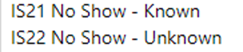
- For SS Applicants, set the SS Journey Status to one of 2 options: SS05D, SS05E
- Ensure that this is set for ALL members of the household.
- The system will automatically remove the host details from the locked fields on the household page (after about 30-40 seconds)
The host/host address fields will now be empty, the link between sponsor/host and applicant will be removed and the sponsor/host will now become available. The offered property status will also revert back to pending checks to enable you to start the triage process for move on, if relevant.
Please note: If not all members of the household are no show’s then you will need to split the household removing the no show applicants into their own household group.
For SS applicants, this will only apply when a host has been directly allocated to a household and then the household doesn’t show.
Recording additional sponsor household members
A sponsor household member is a person that is living with the applicant at the time the application to be a sponsor is made. For example, a child or partner.
Understanding who lives with the sponsor in their home, will help to ensure the appropriate checks are undertaken.
To add a sponsor household member, you need to:
- Click on Sponsor Household section in the left hand navigation.
- Click in the top application navigation bar.
- 3) Add the name of the sponsor. Click into the Sponsor field and the most recent record you have opened will show in the drop down. Otherwise you can hit return for a full list of start to type their name for a short list of options to show.
- Complete the remainder of the fields.
- Click Save or Save & Close.
Alternatively, you can access via the sponsor household tab on the household page and select +new sponsor household. This will take you to the new sponsor household page and aut0 populate the sponsor details.
Handling Duplicate Applicant Records
Many Ukrainians have applied on several visa schemes to seek sanctuary in Wales and the UK. If they have had a visa approved for more than one scheme, the data in the platform may reflect this, appearing as duplicate records.
It may be clear to you which sponsorship scheme a person is travelling on, for example if they arrive at a Welcome Centre (super sponsor) or if they have their own sponsor (Individual Sponsor). If it is not clear, you can ask the individual to confirm which scheme they are travelling on, or you can ask to check their application number on any emails or documentation they have brought with them.
When you have established which application is the duplicate, take the following steps to mark out the duplicate record and separate it from any existing household groups:
- Make a note of the application number of the duplicate record. In the true record, add a case note and include the duplicate application number for future reference.
- Open the applicant’s duplicate record on the Summary section.
- Under SS or IS Journey Status, select SS11/IS100 Duplicate Record.
- Under status reason, select Move to another Visa Scheme.
- Remove the duplicate applicant from any household group they are in using the Removing an Applicant to a New Household guide.
- Ensure the housing needs record reflects the correct number of people and their requirements using the Updating an existing housing needs record guide
- To remove these duplicates from your system or personalised Views, filter the SS or IS journey status column to ensure SS11 / IS100 is not included.
Rejected or Withdrawn Sponsors / Hosts
There may be occasions where a sponsor/host wishes to withdraw their interest in hosting or is rejected because of failed checks, such as local government/ property checks.
If a host expresses that they wish to ‘withdraw’ from the scheme or is ‘rejected’ because of failed checks the record will need to be set to the correct sponsor journey status in order for the system to deactivate their records.
Once selected the system will automatically deactivate these records to prevent them from showing up on the active sponsors list.
- You will still have the ability to create case notes on the record once deactivated.
- The offered property tab for the host address will also become inactive and the offered property status will change to ‘removed’
- If you need to access a withdrawn / rejected sponsor record – you can locate these via the inactive sponsor’s view:

To reinstate a withdrawn host
If a host who has previously withdrawn from their responsibilities to host reaches out to state, they wish to begin hosting again you will need to obtain access of the previously deactivated sponsor/host record.
As local authorities don’t have access to reactivate records, data champions will need to contact the UDP team via the nationofsanctuarysurvey@gov.wales mailbox to request that the sponsor record be reinstated to an active status. Please include in your request:
- The name of the sponsor
- The action to be taken – status changed from HST004-withdrawn to HST003-Active
- A brief description that the sponsor has wished to resume their status as a host
The UDP team with then reactivate the sponsor/ host record and the offered property record. The offered property status will be changed to pending checks and it will be your responsibility to ensure that all sponsor/host checks are still relevant before making the property available within the move on search.
Handling Fake Sponsors
There may be occasions where you come across Sponsor records that are fictitious. This may be the case where the property exists but everything else does not. The sponsor may also have several different information addresses, telephone numbers and email addresses.
If you establish a fake sponsor within the UDP you must take the below steps to ensure the record is dealt with correctly:
- Raise a ticket with JIRA– please include the below sentence when raising a ticket to avoid DLUHC push back:
- Add a note to the Sponsor timeline explaining that the record is rejected due to being a ‘Fake Sponsor’ and include the JIRA ticket reference.
- Update the Sponsor/ Host Journey Status to HST005 Rejected (this will make the record inactive)
- Email the contact centre national advisory service at support@sanctuary.gov.wales with all relevant information including any UANS’s for the applications and the suspected host’s name.
“Wales we have a robust system in place to ensure that once checks are completed on a local level, the LA’s will individually raise a Jira ticket to flag as fake.”
The national advisory service will then mark the sponsor as unsuitable on Foundry, check for any duplicates and raise any additional concerns. Should there be any further requirements/ concerns, CMT will liaise directly with the relevant LAs.
Please note: It is not the LA’s responsibility to log these cases within foundry, please pass these onto the National Advisory Service.
Duplicate Hosts with no approved applicants attached
From time to time, you may come across an additional host record. These will usually have no linked applicants or PTs attached.
It will normally show an application linked with no applicant name which suggests that the applicant has not yet been approved.
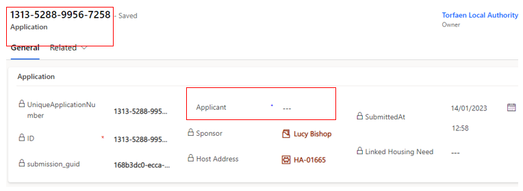To avoid having multiple records in the system for hosts/sponsors you can deactivate these by selecting their sponsor/host journey status to HST006 – Duplicate.
The record will be automatically de-activated
IMPORTANT: these records should only be deactivated if there is a live active record for the sponsor/host already in the system.
If this is a new sponsor/host record with multiple duplicates linked to different blank (unapproved) applications, these will need to be kept active until the applications have been approved. This is due to the likelihood that the individual applicants will form a household group once approved and the duplicated sponsor records will be automatically deactivated as part of the deduplication process at data load.
If you need to access a deactivated sponsor record – you can locate these via the inactive sponsors view:
Updating Sponsor Communication Preferences
A sponsor/host may make contact to state they don’t want to receive any communication, however it is necessary that essential communications are still carried out. This means they should only receive information from Welsh Government regarding their current sponsor/hosting position. Restricting their communication preferences to essential communication only means they will stop receiving updates regarding things such as Ukrainian National holiday updates/ information on local Ukrainian events etc.
To action this request in the UDP:
- Go into the Sponsor record, on the summary tab
- Locate the No Non-essential Communications check under Case Notes and Activities
- Toggle this to YES
Please note: you will need to click the dotted lines once for the toggle to appear and then you can click this again to toggle over to YES

Creating personalised System Views and Reports
Editing filters
To add a new filter:
- Select the Edit filters button on the appropriate screen
- Click the Add drop-down and choose to filter by Row, Group or Related Entity.
- Choose the row, group or entity you want to filter by (for example, Last Name) and specify the criteria.
- Add more rows, groups or entities to filter by, or delete as applicable.
- Check the checkbox at the start of each row before attempting to apply your filters.
- Click the Apply button . This will filter the selection on your screen.
Editing columns
On the Edit columns panel, you can add additional columns to your system view, change the order of columns and remove columns from your system view.
Add columns to your system view
- Click the Edit columns button
- From the Edit columns panel, click the Add columns button . This will reveal additional columns which can be added to your system view.
- Scroll through the list of columns, or use the search tool to find the column you are looking for.
- Left-click on the columns you want to add. Once you have added all columns required, click the close button to return to the Edit columns panel
- To apply your changes and see the new columns on your system view, click the Apply button on the Edit columns panel
- To discard your changes click the Cancel button
Change the order of columns on your system view
To change the order in which columns appear on your system view:
- Click the Edit columns button
- From the Edit columns panel hover over any column (your cursor should appear as a four way arrow)
- Click and drag the column into the required order.
- To apply your changes and see the new columns on your system view, click the Apply button
- To discard your changes click the Cancel button
Remove columns from your system view
To remove a column from your system view:
- Click the Edit columns button
- From the Edit columns panel hover over any column
- Click on the options button that appears beside the column name.
- Click the Remove button
 to remove the column from your system view.
to remove the column from your system view. - To apply your changes and see the new columns on your system view, click the Apply button .
- To discard your changes click the Cancel button
Saving your own system view
Once you have added/removed columns and filtered information, you can save your view. This is helpful if it is a view that you will use frequently.
- Once you have changed your filters / columns as necessary, click on the arrow next to the system view title, such as All Applicants
- A drop down menu will open.
- Click Save as new view
Deleting your own system view
If you no longer require a saved view, you can delete them from your ‘MyView’ list.
- Click on the System View drop down arrow.
- Select Manage and share views.
- A new window will open.
- Select the view you wish to manage and click on the 3 dots to the right of the name
- Select the option you wish to choose. Options Include:
Hide - Hide from View. If you have a view that you have hidden it will give you the option to ‘show’.
Set as default view - Set as your default view when you open the data platform.
Share - Share the view with colleagues.
Edit Info - Change name and description of the selected view.
Assign View - Assign the view to a group or individual.
Delete - Will permanently remove the view.
Extracting information to replicate Objective Connect
Responses to our platform user survey showed that many local authorities used the Objective Connect data for internal reporting.
To help you continue to feed your own internal reporting systems, we have developed a set of templates within the platform which you can use to extract information that you previously received via Objective Connect.
The available templates are all found within the Applications section of the system and are accessed through pre-set views. A set of views are available which correspond to the Excel templates which you can use to extract the information.
The table below shows:
Objective Connect Data Sheet: the name of the data sheet you have previously received via Objective Connect
UDP View: the data platform view that you must access to see the data arranged in the same way as Objective Connect
UDP Excel template: the name of the related Excel template which enables you to extract the data.
| Objective Connect Data Sheet | UDP View | UDP Excel template |
|---|---|---|
| Approved Applications | Application Main Applicant - OC | ApprovedApplicants-OC |
| Sponsor | Application Sponsor - OC | Sponsor-OC |
| Sponsor Hosting Address | SponsorHostingAddress - OC | SponsorHostAddress-OC |
| UK Arrivals | UK Arrivals - OC | UK Arrivals-OC |
Note: In downloading the templates, you must click ‘Download Excel Template’ and not ‘View in Excel Online’. Using the download template option removes the risk of editing system data in the Excel Online version.
For the templates to mimic the layout of data on Objective Connect, formulas have been used to ensure the data sits in the correct columns. If you wish to manipulate the data once downloaded, it is recommended you save your own version of the download to remove the formulas.
How to access and extract the data
- To access all the templates, click on the Applications section of the platform (under Placements in the left-hand menu). Under the Views, select the relevant view with OC in the title.
- If you are accessing the templates for the first time, you need to create a connection between your view and the templates. To do this:
- Click on Excel Templates, and then click View All My Templates. You do not need to repeat this step again in future.
- After you click View All My Templates, simply click the Back arrow button to return to the view you selected.
- If you are unable to see Excel Templates listed after ‘Run Report’, in the system menu, click on the three dots for further options.
- When you have the view you wish to export on your screen, click on Excel Templates in the top menu, and click the arrow next to the Template – in this case Approved Applicants – OC:
- You must then click the Download Approved Applicants – OC:
- The downloaded content will appear in your Downloads folder on your computer for you to use in your internal reporting.
Please remember the note above in relation to the formulas and save a copy of your own for editing. The pop-up message which appears on the screen can be ignored. The upload function has been disabled on the platform.
Escalating Data Platform related issues or functionality requests
How will service incidents relating to the Data Platform be handled?
A Support Model has been developed and agreed with colleagues from Digital Health and Care Wales. User incidents will be triaged by your organisation’s local IT service desk in the first instance, before a call is routed to the Data Platform service desk.
Please speak with your local champion before contacting your IT service desk.
Click here to access further information about the Service Model and Who to contact' and then link to the Support Model page on the hub.
Homes for Ukraine Data Platform FAQ
Please use the tabs in the top right of this page to access our FAQs, training videos and our latest news.
Ukraine Data Platform Queries
Important
When sending emails to any of the mailboxes please ensure that only essential information is included. If referring to an applicant record, the UAN (unique application number) / Household ID (begins with FAM or WG) is sufficient information to send, if you don’t have this information, please send over the applicant’s name. If referring to a sponsor record, the sponsor’s name is sufficient. Please do not send screenshots of the live Data Platform and please do not attach or send screenshots of your local documents including spreadsheets. This may result in a data breach in which you as a Local Authority will be responsible for as independent data controllers for the UDP.
General Training and System Queries
If you have a query relating to how you use the Ukraine Data Platform please:
- Check the available documentation and videos on this site in the first instance.
- If you are unable to find the answer to your question, please speak with your local data champion.
- If they are unable to resolve your query, they will contact us through the nationofsanctuarysurvey@gov.wales mailbox to seek further assistance.
The Nation of Sanctuary mailbox is for non-urgent platform queries only.
Due to the breadth of queries that we receive through the mailbox, we will be prioritising messages relating to a technical issue, data issue or where the answer to a question isn’t available on this site.
Safeguarding Queries
For queries of safeguarding concern then Local Authorities are requested to contact their respective social services and / or legal teams for advice and assistance in the first instance. Any exceptional cases that require to be flagged to Welsh Government (WG) can be raised to the National Advisory Service in the Contact Centre at support@sanctuary.gov.wales who will ensure teams within WG with the appropriate expertise can respond to your concern.
Data Queries
For queries relating to data, including missing applicant / sponsor data and identified issues with the data load please contact the nationofsanctuarysurvey@gov.wales. Please do not send data queries to data@gov.wales.
Policy Queries
For any policy queries please send these over to the UkraineResponseQueries@gov.wales mailbox.
General System Feedback
For any General feedback on the system and processes, please email nationofsanctuarysurvey@gov.wales
Summary of processes within each scheme
Super Sponsor Scheme
Each step of the process involves checks and updates to the data platform to ensure arrivals from Ukraine are safely guided to accommodation in Wales. This step-by-step process outlines what needs to be done within the data platform and who is responsible for it.
Overview of Super Sponsor Route
SS01 - Visa Approved
- SS01A - Application Pending
- SS01B - Uncontactable
- SS01C - Complex Case Review
SS02 - Ready for Welcome Centre Allocation
SS03 - WC Allocated
SS04 - Applicant informed of WC Arrangements
SS05 - In Transit
- SS05A - In isolation
- SS05B - Hospital admission
- SS05C - In temporary accommodation pending medical discharge
- SS05D - No Show - Known
- SS05E - No Show - Unknown
SS07 - Housed in WC
SS08 - In WC ready to be moved on
SS09 - Move on Accommodation Allocated
SS10 - Moved On
SS11 - Duplicate
SS12 - Support Ended
How the process works in summary
| Journey Status | Primary responsibility | Key System updates required |
|---|---|---|
| SS01 - SS05 | Contact Centre |
Update all fields as necessary and create initial housing record Status Changes |
| SS05 - SS05E | Contact Centre |
CC to complete arrival hub details and make them aware of ETA and other info CC to update status if travel has ceased due to reasons in status’ SS05A-E or if applicant is a no show Arrival Hub to phone through confirmation of contact and Contact Centre to update records Status Change |
| SS07 | Contact Centre |
Checks undertaken by Welcome Centre and system updated through Case Notes and Check box Placement record created Housing Need checked and updated if required Status Change |
| SS08 | Welcome Centre | Status Change |
| SS09 | Welcome Centre / Local Authority |
Accommodation is allocated but individual is still in welcome centre. Update status notes |
| SS10 | Welcome Centre / Local Authority |
Change Status Close Welcome Centre placement record Create a new placement record for their permanent accommodation. If this is a sponsor/host placement then the reservation process should be followed. |
| SS11 | Contact Centre |
CC‘s initial triage of records produce more than one application for the individual Update status to reflect duplication of record |
| SS12 | Welcome Centre / Local Authority |
Change status Create new placement tracking for new accommodation (if applicable) Select appropriate reason in status reason dropdown |
How the process works in detail
| Step of process | What is happening here? | What needs to happen on data platform? | Who captures this on the Data Platform? | Checklist to move to next status |
|---|---|---|---|---|
|
SS01 Visa approved – initial contact to be made to start journey to Wales if all necessary factors are in place. |
An individual with an approved visa for the Super sponsor route is identified on system. If contact is made, the following things are checked to ensure they are ready to begin their journey to Wales:
|
Search data for individuals and linked people with SS01 statu Record that necessary checks have taken place in a case note. Identify and update records of all linked people with SS01 status and confirm they are ready to travel. If not all members of group are ready to travel, set a reminder task to recontact to check when all are ready to travel. Open a case note on the system to record any details of travel arrangements (times/place of arrival). |
Contact Centre |
SS01 to SS02 checklist Recorded if interpreter needed, language specified, and details of LL Pin provided Confirmed that the citizen has received their permission to travel letter Confirmed if the citizen is bringing pets and if so, has arranged appropriate checks and obtained an APHA licence Linked all family members to the lead applicant and confirmed any vulnerabilities in the group Queried any covid symptoms and given basic advice on travel Confirmed citizen has made travel arrangements to the UK/ Wales, including method of travel and ETA Ensure all has been recorded in the timeline notes Has a follow up email with all details been sent to citizen |
|
SS02 Ready for Welcome Centre (WC) Allocation SS03 WC Allocated |
Three interlinked steps in the process which is done once the separate WC availability list is provided to CC each day. Individuals/households |
Search by SS02 status to present list of those to be allocated. Look at housing requirements and cross reference with list of availability provided by WCs. Update availability list and add name of WC to individual/group’s records. Change Status to SS03 once the WC is allocated Access contact number on system and contact applicants to notify them of a space being reserved and they can commence their travel. Open a case note on the system to record any details of travel arrangements (times/place of arrival). |
Contact Centre | |
|
SS04 Applicant informed of WC Arrangements |
Once SS04 status is reached and the applicants have a space in a WC reserved, they can start their travel to Wales. No guarantees are made to house people to others they may know, but consideration will be given if suitable accommodation can be found or in cases of vulnerable individuals travelling together. Some WCs are only suitable for individuals, some only for families, some only for over 18s. One is able to house people with pets. Applicants confirm that they are travelling to UK. Contact Centre gathers information about flights/trains/ferries to track the applicants. CC regularly checks in with applicants throughout their journey to check their welfare and that journey is progressing as planned. |
SS04 - SS05 Checklist Has clear details of WC been provided to the citizen Are details of the citizens travel arrangements provided Confirmed that citizen has started / will start travelling to UK Has a note at the top of the timeline been added under title EXPECTED ARRIVAL DATE/ TIME and the contact centre confirmed arrival date box has been updated. |
||
|
SS05 - In Transit SS05B – Hospital admission SS05C Temporary accommodation pending medical discharge. SS05D – No Show – Known SS05E – No Show - Unknown |
Applicants have confirmed that they are on their way to UK. They will be in regular contact with the Contact Centre during their journey to ensure they are reaching their Welcome Centre destination. Contact Centre may liaise with any arrival hubs to ask them to make sure the applicants get on the correct transport. Contact Centre remains in touch with applicant along journey until they are in care of Welcome Centre staff. |
Access any existing case notes outlining travel arrangements to check where applicants are on their journey. Contact them when they reach a change in trip (e.g. from plane to train) to provide assistance and update notes to show leg of journey has been completed. |
Contact Centre Arrival Hub ( to phone through info to contact centre when contact has been made) |
Confirmed that citizen has started travelling to UK If not started travel, confirmed date and time due to travel – notes in timeline Confirmed with citizen if they are travelling to another UK port and planned the best route for them to get to Wales Contacted first Arrival hub (if applicable) with details of citizens ETA and instructions of next steps Contacted WC to inform of ETA to them Confirmed with citizen the planned route and where to go at arrival hub Liaised with Arrival Hub and Welcome Centre if any taxi’s need booking Checked in with citizen throughout journey Confirmed citizen has reached Welcome Centre Change SS status to SS07 once tracking is completed |
|
SS07 - Housed in WC |
Applicants have been supported by the Contact Centre to reach their allocated Welcome Centre. The Welcome Centre may need to arrange last step transport to take the new arrival from the nearest transport hub to the centre. At Welcome Centre, new arrivals are allocated a room, have immediate needs met and arrangements are made for local authority services appointments. Once new arrivals have settled into the Welcome Centre, this step ensures local authority services are notified of a need for support and new arrivals are signposted to national services such as universal credit support. |
Allocate a room/rooms. Find new arrivals on system Create a case note to confirmation that arrival checklist is complete. Check housing need is correct on the system Create placement record including room number details for new arrival. Create case note for health appointment time, date and location. Add ‘complete’ to case note when appointment has taken place. If new SIM card provided, add new contact number to system. |
Welcome Centre (if have direct access) or LA liaison if direct access isn’t available. |
Checklist on arrival: Meet any immediate needs (medical, essential supplies). If any medical needs, contact healthcare team or 111 if further advice needed. Offer Covid test (not compulsory but advised). If positive, alert healthcare worker. Allocate room. Provide a Welcome Centre information pack and tour of facilities. Secondary checklist once rooms allocated: Book individual/family health appointment with health team. Refer for DWP support. Refer to casework team if immediate financial support is required. Offer new mobile SIM card if required. Final Checklist before status change Assistance offered to open a bank account. Offer ESOL language classes. Arrange attendance at cultural briefing session. Adults: refer to Working Wales for employment/ training support. Children: Arrange immediate education and early years provision Signpost to biometric data registration with Home Office Check accommodation needs haven’t changed. Can move status from SS07 – SS08: |
| SS08 - In WC ready to be moved on | Once all checks have been completed, the Welcome Centre new arrivals to move into for the duration of their visa, they will leave the welcome centre. |
Create a case note to confirm that the checklist has been offered and add any relevant notes. Change status from SS07 to SS08 once all is complete. |
Local authority | |
| SS09 - Move on accommodation allocated | Permanent accommodation has been identified and allocated to the family, but the family have not yet moved from the Welcome Centre | Link Sponsor record to household via reservation process | Local authority | |
| SS10 - Moved On | Family have left the Welcome Centre and moved into their accommodation or repatriated to another country / back to the Ukraine |
Open new placement record and record details of new address on system. When household leave the Welcome Centre, change their status to SS10. Add a relevant status reason |
||
| SS11 - Duplicate Record | An individual has applied for multiple applications on the same, or different schemes. | The applicant journey status should be marked as duplicate record and a case note should be created detailing the actual record for the individual. | Contact Centre / LA | |
| SS12 - Support Ended | The family/individual no longer require regular support from the scheme. This will be accompanied by the relevant status reason. | Create a case note and update the journey status with the correct relevant status reason. The ‘no non-essential communications’ tab should also be toggled to ‘yes’. | LA |
Individual Sponsor Scheme (Homes for Ukraine)
Each step of the process involves checks and updates to the data platform to ensure arrivals from Ukraine are safely guided to accommodation in Wales, through the Individual Sponsor Scheme.
Overview of Individual Sponsor Route
IS01 - Visa and host approved
IS02 - Placed with Host Family
IS03 - Moved to accommodation
IS04 - Rematching needed
IS05 - Move On
ISO7 - Support Ended
IS21 - No Show - Known
IS22 - No Show - Unknown
IS23 - Uncontactable
IS99 - On Hold
| Step of process | What is happening here? | What needs to happen on data platform? | Who captures this on the Data Platform? | Checklist to move to next status |
|---|---|---|---|---|
| IS01 - Visa and Host Approved |
The applicant has successfully applied for a visa under the Homes for Ukraine scheme and has found their own host. At this stage, the Host has undergone preliminary checks approved by Home Office for a visa to be approved. Further local authority checks may still deem the host as unsuitable. Host statuses can be found below for further reference |
Data provided from UK Government is shared with Welsh Government and added to the system. The records of hosts and new arrivals will be linked together on the system. Local authorities to complete supplementary Property and DBS checks and update case notes and toggle switches as necessary. See HST002. |
Welsh Government Local authority |
|
| ISO2 - Placed with host family |
The host/sponsor has made arrangements for the applicant to travel to their initial home. A welfare visit should be arranged to check the new arrival has settled with any support needs identified. |
Follow the reservation process to open a new placement tracking to capture the details of when the new hosting arrangement began. Create a case note to capture that a welfare visit has been made. To commence financial support, record on system the day of month for payments run/ payment eligible date. |
Local authority |
Change status from IS01-IS02 when the sponsor contacts local authority to notify them of applicant’s arrival. It is anticipated that this status will remain in place unless there is a reason to end the placement. |
| IS03 - Moved to accommodation |
This is a temporary journey status, used in instances where an applicant is moved to accommodation that is not provided by their original host/sponsor. This may happen when the duration of an offer comes to an end or if the relationship between the host/sponsor has broken down. They may also wish to move to join other family members housed elsewhere. |
Once a new host has been found, commence DBS and safeguarding checks on the host and anyone living in the host property. Also undertake a property assessment. Update Case notes and toggle switches as appropriate. Close the placement tracking with the original host and note the reason for the placement ending. Open a new placement tracking with the details of their new placement and linking them to their new host. Change status to IS03 during that process. Once individual has moved into the new placement, change status back to IS02. |
Local authority | |
| IS04 - Rematching needed |
This is a temporary status for when a household has requested a re-match to alternative accommodation. This may be within Wales or across UK borders. Rematching may occur for the same reasons as above. This status may precede IS03 as an individual may be rematched before they move into an alternative placement. |
This will vary based on the category of re-match. Please see the reassignment section of the User Guide for specific guidance based on the category. Types of activity on the platform include:
|
Local authority | |
| IS05 - Move On |
Use this status where an individual has moved from their original sponsor accommodation into:
|
|
Local authority | |
| IS07 - Support Ended |
The family/individual no longer require regular support from the scheme. This will be accompanied by the relevant status reason. |
Create a case note and update the journey status with the correct relevant status reason. The ‘no non-essential communications’ tab should also be toggled to ‘yes’. |
Local authority |
Additional Status Codes
IS21 - No Show - Known: Where an individual/family have not shown up as expected, but the reason is known.
IS22 – No Show – Unknown: Where an individual / family have not shown up as expected, and there is no known reason.
IS 23 – Uncontactable: Where a local authority has tried to contact an applicant multiple times but has failed to reach them.
IS99 – On Hold That travel and/ or move to a host is on hold. This may be due to waiting for all families of a household to receive their visas prior to travel, for example.
IS100 – Duplicate The applicant has more than one record on the Data Platform and this is a duplicate.
Sponsor
As sponsors / hosts are identified through the checks and updates to the data platform to ensure arrivals from Ukraine are safely guided to accommodation in Wales, through the Individual Sponsor Scheme.
Overview of Sponsor Status
HST001 - Applied
HST002 - Approved
HST003 - Active
HST004 - Withdrawn
HST005 - Rejected
HST006 - Duplicate
| Step of process | What is happening here? | What needs to happen on data platform? | Who captures this on the Data Platform? | Checklist to move to next status |
|---|---|---|---|---|
| HST001 - Applied | A host has been named on an application and/or they have applied to be a host. | A record for both the host/sponsor and new arrival is created on the system and their records linked together to create the connection between the two entities. | Welsh Government data team | |
| HST002 - Approved |
Checks are made by local authorities take place to ensure the suitability of hosts and their accommodation. A welfare visit is made to ensure the new arrival and host are settled in the arrangement and any necessary support is offered. Finance details to commence payments will also need to be captured on local systems. |
A note should state that DBS checks (either basic or enhanced) and safeguarding checks have commenced and that a housing inspection has also taken place. (No sensitive or personal data should be captured in the system.) An additional note to capture that a welfare visit has been made should also go on the system. |
Local authority |
To move from HST001-HST002:
If all checks are passed, update host/sponsor’s status to HST002. Once their applicant arrives, they will change to HST003 (as they become active hosts). |
| HST003 - Active |
The new arrival(s) moves into the Host/sponsor’s accommodation The host will welcome their new arrivals and support them to liaise with local wraparound support services. |
When new arrivals move in, update the status of the host to HST003. Payment arrangements (details captured on local systems) are put in place to provide financial support to the host and to the new arrival. Local authority will log on the system that an emergency £200 payment has been provided to the new arrival. Create a case note noting Emergency Payment Issued with details of who processed/ authorised the payment and when. Capture whether payment to new arrival made by cash or pre-payment card. |
Local authority | Host status remains at HST003 for the duration of the agreed hosting arrangement. |
| HST004 - Withdrawn | The host/sponsor no longer wishes to offer their property to house individuals/families under either scheme | Change the status and add a case note to the system with any relevant (non-sensitive) information. | Local authority |
|
| HST005 - Rejected | Sponsor has not successfully completed their checks. Application has been rejected |
Local authority must update the case notes opened when checks were commenced to capture that the checks were not completed/passed. Notify external systems (JIRA) of withdrawal of offer to prevent applicant from travelling. If the new arrival is already here, undertake rematching process to find a new host. The status can then be updated to HST005. |
Local authority |
|
| HST006 - Duplicate | Sponsor record is duplicated due to applicant visa not yet being approved |
Update the case notes to explain that sponsor/host record is linked to application that has not yet been approved The status can be updated to HST006 - Duplicate |
Local authority |
|
Status reasons and explanations
Whilst journey status reasons are not mandatory fields, it does help to provide additional ‘at a glance’ context for colleagues accessing the record. Here is a list of the Individual and Super Sponsor Scheme journey status reasons and a brief explanation.
Users of the system will need to make a judgement on a case-by-case basis as to which status reason is applicable for a particular record at a point in time.
| Status for Applicants | Explanation |
|---|---|
| Active | The case is active and progressing as expected. |
| Case Completed | The individual has either moved out of a welcome centre and into hosted accommodation (if on Super Sponsor Scheme) or have moved out to more permanent accommodation (if on Individual Sponsor route). |
| Confirmation Call Required | A call is required to confirm travel arrangements. |
| Family Visas Pending | Individual is awaiting visas for other family members who are travelling as part of the household. |
| Move to another Visa Scheme | Individual has applied and been issued visas under multiple schemes and has switched the one they wish to travel under. |
| Not Travelling | Individual has chosen not to travel. |
| Other Call Back Required | A call back is required to discuss something relating to their journey or their stay. |
| Pet Service Pending | Awaiting confirmation that Pet transportation and quarantine housing has been arranged in the UK. |
| Travel Date Pending | Awaiting travel details. |
| Uncontactable | Multiple attempts to contact an individual (or lead contact if a child) have been unsuccessful. |
| Visa Confirmation Pending | Waiting for permission to travel documentation. |
| Self-Supporting | Individual has moved into self-funded accommodation and are no longer reliant on Local Authority services provided to Ukrainians on their arrival into the UK under either the IS or SS Scheme. |
| Repatriation | They have returned to their home country and have not communicated plans regarding their return. |
| Deceased | This status reason can be used if the person has died whilst in the UK. Please provide additional clarification as to reason in the case note. |
| Status Reasons for Sponsor/Host | Explanation |
|---|---|
| Active | The record is active and in use. |
| Duplicate Record | There are multiple records for the same sponsor/Host. Mark up all bar one as duplicate |
| Adverse Checks | An individual has failed a check against the Police National Computer (PNC) or the Home Office Warnings Index (Central Gov). Used in conjunction with rejected status code when appropriate |
| Inactive | The record is no longer active. Used in conjunction with rejected or withdrawn status codes. |
Using Multi-Factor Authentication to access the Data Platform
What is Multi Factor Authentication?
Multi Factor Authentication (MFA) is a process in which users are prompted for an additional form of identification during the sign-in process. This is usually a code or biometric login through their mobile phone. Using MFA increases the security of using the data platform.
A second form of identification makes it harder for attackers to obtain or duplicate your login details, so we recommend you use your own mobile phone to authenticate your access to the data platform.
You can do this in two ways:
- Using the Microsoft Authenticator app
- Requesting a code sent by SMS to your phone
Using the Microsoft Authenticator app
When you are accessing the Homes for Ukraine data platform for the first time, you will need to set up the Authenticator App. Once complete, it will remember all of your details and is quick to use each time you use the platform.
The app plays no other role on your phone than helping you log into the platform when you require access.
To get started with either authentication method, you will need to access the Data Platform first.
Accessing the Data Platform
- Go to the Live System https://homesforukrainedataplatform.crm11.dynamics.com/
- Enter your email address and click Next.
-
You may see this page as you are taken to a sign in page for your organisation. If the screen you see looks a little different, see the alternative step 3 and 4 below.
(Alternative Steps 3 and 4: Depending on your organisation’s Azure Active Directory, Steps 3 and 4 may look like the following screen. Click Yes, enter your password and click Sign in.)
- Enter your usual password and click Sign in.
- When prompted to review permissions, click Accept.
- A prompt will say More information required. Click Next.
Installing the application on your phone
- The onscreen instructions ask you to ‘start by getting the app’.
- Go to your Microsoft Authenticator app on your mobile phone, (if not previously installed), go to the App Store (for Apple) or Android Apps (for Android) and search for Microsoft Authenticator which looks like the App icon below.
- Click Next on the screen when you have downloaded the app.
- Open the app. If prompted, you should allow the app access to your device camera.
- Using the Microsoft Authenticator app on your mobile phone, select add account, then Work or school. If you have already used the app, you will need to add a new account. Your existing account will remain.
- Using the Microsoft Authenticator app on your mobile phone, scan the QR code which is displayed on your PC screen.
- Using the Microsoft Authenticator app on your mobile phone, select Approve.
- If successful, the Microsoft Authenticator app on your mobile phone shows Sign in Approved.
- Multi factor authentication is now complete.
Once you have successfully set up MFA, you will be taken to the Homes for Ukraine system. Each time you log into the data platform in future, you will be prompted to use your thumbprint or pin code on the app to authenticate your identity.
Requesting a code sent by SMS to your phone
When you are accessing the Homes for Ukraine data platform for the first time, you will also need to set up the authenticator SMS. Once complete, it will remember all of your details and is quick to use each time you use the platform.
You must first register your mobile phone number in order to generate an access code for logging in in future.
To get started, follow steps 1 to 6 of Accessing the Data Platform
When you are prompted to install the Microsoft Authenticator app, instead select "I want to set up a different method" in the bottom left of the screen:
Select 'Phone' from the drop-down menu and click Confirm
Enter your mobile phone number, then select 'Text me a code' and click Next.
You will receive a six-digit code via SMS text message. If the code does not arrive, check that you have entered your phone number correctly (including UK +44 dial code) and that you have mobile data switched on. Click Back to change the number or Resend code to receive another six-digit code.
Enter the six-digit code and click Next:
When your phone is successfully registered, you will be presented with the 'SMS verified' confirmation screen:
Set up is now complete and you can use this method to authenticate your use of the data platform. Click Done to complete the registration.
Once you have successfully set up MFA, you will be taken to the Homes for Ukraine system. Each time you log into the data platform in future, you will be prompted to provide the six-digit code to authenticate your identity.